DNIT 259/2023-CLASolos - Classificação de solos finos tropicais para finalidades rodoviárias utilizando corpos de prova compactados em equipamento miniatura - Classificaçãoabrir no sitePDF
índice da raiz transcrito como no PDF ('S'); na metodologia MCT a raiz é cúbica (possível erro do PDF, p. 3)
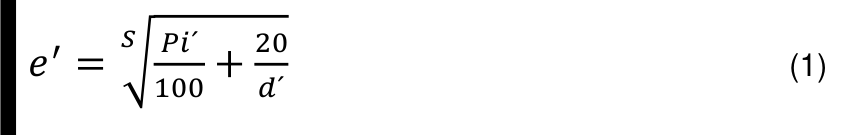
Eq. 1: índice da raiz impresso como "S" (a metodologia MCT usa raiz cúbica); a definição de "n" que acompanha a equação não é usada nela. 3.8 b usa AF < 48 e AF > 48, e o critério seguinte AF ≥ 48.
DNIT 444/2023-CLAClassificação de solos tropicais de granulação grossa - Classificaçãoabrir no sitePDF
"¾ da amostra total (32,5 kg)": com 50 kg seriam 37,5 kg (32,5 + 12,5 ≠ 50). Transcrito como no PDF.
Seção 4: ¾ de 50 kg escrito "32,5 kg" (37,5, como no fluxograma); o fluxograma diz "Sg" onde deveria ser "Sp"; a Tabela C2 descreve Ps-NS' e Sp-NS' como "argiloso" (siltoso); as Tabelas 1 e 2 deixam indefinidos os limites exatos de 10 %, 30 % e 50 %; a seção 6 cita a Figura B1 para o grupo MCT.
DNER-EM 036/95Cimento Portland - recebimento e aceitaçãoabrir no sitePDF
Quadro IV: Blaine do CP II-F-32 impresso "≤ 260" (deveria ser ≥ 260) e expansibilidade "≥ 5" para CP II-F-32 e CP III-32 (deveria ser ≤ 5); o Quadro II diz "CP III-F" onde deveria ser CP II-F; a composição é obrigatória em 4.2, mas seus ensaios aparecem como facultativos no Quadro V.
DNER-EM 230/94Agregados sintéticos graúdos de argila calcinadaabrir no sitePDF
Tabela de 5.1, Classe II: massa unitária "Máx. –" e "Mín. 0,880" — colunas possivelmente trocadas. Transcrito como no PDF.
0,880 t/m³ é ao mesmo tempo o máximo da classe I e o mínimo da classe II.
DNER-EM 262/94Escórias de aciaria para pavimentos rodoviáriosabrir no sitePDF
5.1 d: o limite de abrasão Los Angeles cita só "sub-base e revestimento"; a ficha aplica também à base, com aviso.
DNER-EM 276/00Tinta para sinalização rodoviária horizontal, à base de resina acrílica emulsionada em águaabrir no sitePDF
A Tabela 3 exige estabilidade na diluição, mas as referências não incluem a DNER-ME 184; sangramento só aparece em 4.14, fora da Tabela 3.
Não indica método para sólidos por volume, identificação por IV, gasolina e intemperismo; finura e poder de cobertura (Tabela 1) sem as DNER-ME 027 e 026 na seção 2.
DNER-EM 364/97Alcatrões para pavimentação - Especificações de materiaisabrir no sitePDF
Tabela (p. 3, página em paisagem): células mescladas (Aplicação) repetidas em cada coluna; linhas de viscosidade/flutuação separadas por temperatura. Símbolos de Água e Densidade sem glifo no PDF (fonte MSOutlook, caixa vazia / '!'): lidos pelo contexto como ≤ (água, máx.) e ≥ (densidade, mín.), conforme AASHTO M 52 para alcatrões RT.
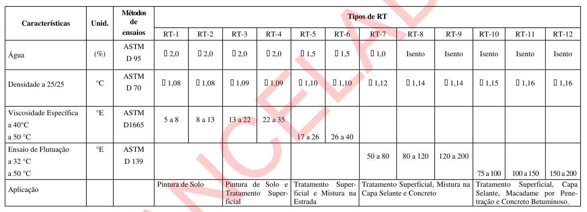
Tabela: os símbolos antes dos valores de Água e Densidade não têm glifo no PDF; lidos como ≤ (água, máximo) e ≥ (densidade, mínimo) pelo contexto da AASHTO M 52. A unidade da Densidade aparece como "°C" e a da Flutuação como "°E".
Densidade com unidade "°C" (é adimensional, 25/25 °C); ensaio de flutuação em "°E" (a ASTM D 139 dá segundos); os sinais ≤/≥ aparecem como glifos ilegíveis no PDF.
DNER-EM 366/97Arame farpado de aço zincadoabrir no sitePDF
5.1.1 (p. 2): símbolo sem glifo no PDF (fonte MSOutlook, aparece como caixa vazia); interpretado como ±
5.1.4 (p. 3): símbolo sem glifo no PDF (fonte MSOutlook, aparece como caixa vazia); interpretado como ±
5.1.8 (p. 3): símbolo sem glifo no PDF (fonte MSOutlook, aparece como caixa vazia); interpretado como ≤ e Ø (diâmetro do fio, mm)
5.1.8 (p. 3): símbolo sem glifo no PDF (fonte MSOutlook, aparece como caixa vazia); interpretado como ≤ e Ø (diâmetro do fio, mm)
6.2.3 b exige que ao menos 2 das 4 amostras de contraprova passem, enquanto 6.2.3 c admite só uma abaixo do mínimo (e não abaixo de 95 %); os limites de zinco de 5.1.8 pulam Ø = 1,80 exato; 4.1 escreve "N (kgf)".
DNER-EM 367/97Material de enchimento para misturas betuminosasabrir no sitePDF
4.3 associa a DNER-ME 084 à "massa específica aparente", mas a 084 determina a massa específica real; 5.5 remete as cinzas volantes às DNER-ME 180/181, que são métodos sem limites (valores só informativos na ficha).
DNER-EM 368/00Tinta para sinalização horizontal rodoviária à base de resina acrílica e/ou vinílicaabrir no sitePDF
Massa específica pela DNER-ME 190/94, ausente do acervo (o mesmo na DNER-EM 371).
DNER-EM 370/97Defensas metálicas de perfis zincadosabrir no sitePDF
Tabela 2: marcadores de lista sem glifo no PDF viraram '!' e o título pegou '50 100' da Figura 1: refeita em tabm02
título (p. 4) com '50 100' da Figura 1; tabela na p. 5; marcadores sem glifo no PDF
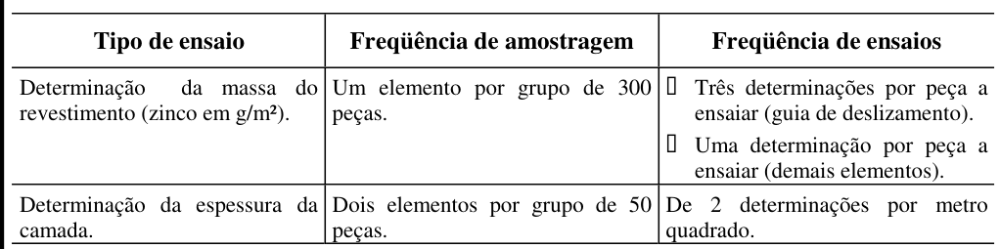
A Tabela 1 não cobre e = 3,0 mm (a ficha adota 23 %); 6 amostras por 300 não corresponde a nenhum plano da NBR 5426.
DNER-EM 371/00Tinta para sinalização horizontal rodoviária à base de resina, estireno-acrilato e/ou estireno-butadienoabrir no sitePDF
Referências: DNER-ME 018/94 aparece três vezes (itens b, c e d).
A DNER-ME 018 aparece repetida três vezes nas referências (itens b a d); cita a DNER-ME 190/94 (massa específica), fora do acervo.
DNER-EM 372/00Material termoplástico para sinalização horizontal rodoviáriaabrir no sitePDF
Referências: DNER-ME 246/94 aparece duas vezes (itens c e f).
5.12: "e suas tolerâncias exceto notação…" — o "exceto" parece erro de texto.
Sem método para índice de deslizamento, desgaste Taber e sulfeto de cádmio; sem regra de amostragem para laboratório.
DNER-EM 374/97Fios e barras de aço para concreto armadoabrir no sitePDF
no PDF os símbolos da fonte MSOutlook saem como caixas/'!': lidos pelo contexto (σ x ε, φ, ±, ≥) conforme a NBR 7480/85
no PDF os símbolos da fonte MSOutlook saem como caixas/'!': lidos pelo contexto (σ x ε, φ, ±, ≥) conforme a NBR 7480/85
no PDF os símbolos da fonte MSOutlook saem como caixas/'!': lidos pelo contexto (σ x ε, φ, ±, ≥) conforme a NBR 7480/85
no PDF os símbolos da fonte MSOutlook saem como caixas/'!': lidos pelo contexto (σ x ε, φ, ±, ≥) conforme a NBR 7480/85
cabeçalho achatado da Tabela 3 (vai em tabm03) + notas (A)-(D); no PDF os símbolos da fonte MSOutlook saem como caixas/'!': lidos pelo contexto (σ x ε, φ, ±, ≥) conforme a NBR 7480/85
Tabela 3 (tab03 automática com cabeçalho duplicado e posta em 4.1.1); φ lido pelo contexto (caixas no PDF)
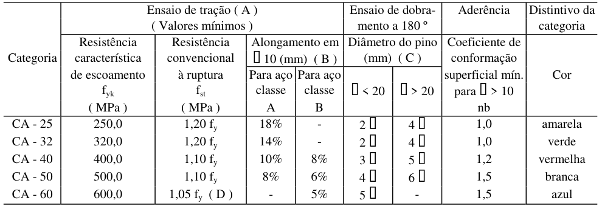
Item 4.6 cita "ver 4.9.1", item que não existe na norma.
Tabela 2 em "kgf/m" (deveria ser kg/m); cabeçalho de alongamento "(mm)" com valores em %; a Tabela 3 (pinos "φ < 20 / φ > 20") deixa φ = 20 indefinido; a nota (C) "3 pinos de φ 8" é obscura; fst/fy do CA-50 = 1,10, contra 1,08 da NBR 7480.
DNER-EM 375/97Fios de aço para concreto protendidoabrir no sitePDF
Tabela 1 (p. 2): células mescladas no PDF (tolerância, área/massa de cada par de linhas, estricção, dobramentos e relaxação) repetidas em cada linha; '±' sem glifo no PDF; 'Relação máxima' como no PDF (provavelmente 'Relaxação')
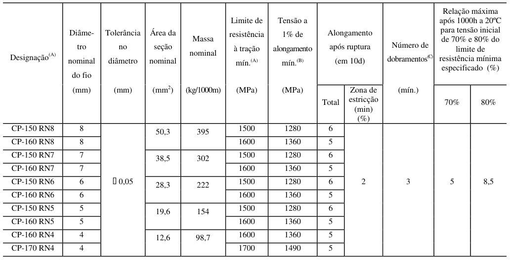
Tabela 2 (p. 3): células mescladas no PDF (tolerância, área/massa de cada par de linhas, estricção, dobramentos e relaxação) repetidas em cada linha; '±' sem glifo no PDF; 'Relação máxima' como no PDF (provavelmente 'Relaxação'); aqui '(min) (%)' abrange Total e Zona de estricção
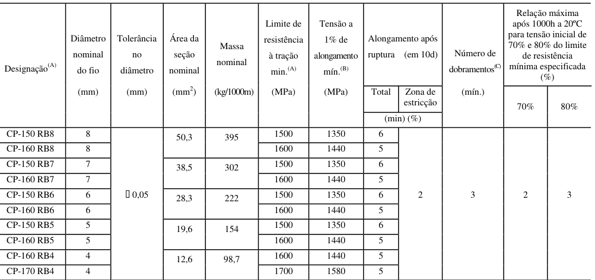
Tabela 1 diz "Relação máxima" para a relaxação; alongamento "Zona de estricção 2 %" parece deslocado.
DNER-EM 376/97Cordoalhas de aço para concreto protendidoabrir no sitePDF
Tabela 1 (RN) dá a relaxação "após 100 h", enquanto a Tabela 2 (RB) dá 1000 h; a tolerância ±0,3 mm da Tabela 3 não diz se vale para o fio ou para a cordoalha.
DNER-EM 379/98Esferas de vidro para sinalização rodoviária horizontalabrir no sitePDF
Cita microesfera "drop-on (II A)" da DNER-EM 373, tipo que não existe (lá são F e G); peneiras 1,2 e 0,70 mm para as nominais 1,18 e 0,71 mm.
A seção 5 salta de 5.9 para 5.11; sem requisito de resistência à umidade nem cláusula de dispensa de ensaios.
DNIT 046/2004-EMPavimento rígido - selante de juntas - Especificação de Materialabrir no sitePDF
5.3 repete no enunciado o título de "juntas longitudinais de articulação", mas o requisito é o da junta de expansão. A fluidez de 5 mm não diz se é máximo.
5.1 b e 5.2 b divergem sobre qual envelhecimento (estufa ou intemperismo) se aplica ao alongamento na tração.
DNIT 050/2004-EMPavimento rígido - cimento portland - Especificação de Materialabrir no sitePDF
Tabela 3: fim de pega do CP IV impresso "≤ 2(1)"; a ficha adota ≤ 12 h.
DNIT 093/2016-EMTubo dreno corrugado de polietileno da alta densidade PEAD para drenagem rodoviária - Especificação de Materialabrir no sitePDF
Lote de 130 cai tanto na Tabela 5 (30–130) quanto na Tabela 6 (130–500); o Anexo A está numerado B.1–B.4; unidade "≤ 50 ηm".
DNIT 094/2014-EMTubos de poliéster reforçado com fibra de vidro (PRFV) e poliolefínicos (PE e PP) para drenagem em rodovia - Especificação de Materialabrir no sitePDF
Tabela 2: cabeçalho diz 'compressão axial' no PDF, embora a tabela seja de tração axial
A Tabela 2 se intitula "compressão axial", mas trata de tração axial (5.8); F dado em "KN/m²" (deveria ser kN/m); 6.4.1 diz amostragem simples para ensaios destrutivos, mas a Tabela 9 tem linhas de amostragem dupla.
DNIT 095/2006-EMCimentos asfálticos de petróleo - Especificação de Materialabrir no sitePDF
o PDF perdeu os sinais de menos (fonte Symbol): no numerador há espaço duplo entre (Tº C) e 1951 e no denominador entre 120 e (50); restaurados conforme a Resolução ANP nº 19/2005 (IST = (500 log PEN + 20 T − 1951)/(120 − 50 log PEN + T))
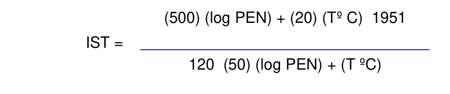
Tabela 1: a fórmula do índice de suscetibilidade térmica e os limites perderam os sinais de menos — o correto é (500 log PEN + 20 T − 1951)/(120 − 50 log PEN + T), limites −1,5 a +0,7; Tabela 2 (p. 5) sem sinais e célula 110/50 com ",0".
Ponto de fulgor citado como "ME 149/94" (que é pH de emulsões); o correto é DNER-ME 148/94 (referência r). "ME 153/94" não consta das referências. Linha do ponto de amolecimento sem nome (só "ºC").
DNIT 111/2009-EMPavimentação flexível - Cimento asfáltico modificado por borracha de pneus inservíveis pelo processo via úmida, do tipo "Terminal Blending" - Especificação de Materialabrir no sitePDF
Tabela 1: o PA cita a DNER-ME 247/94 (termoplástico; o correto é a DNIT 131) e a "DNER ME-384/99" (hoje DNIT 384/2022); "Variação do PA" sem sinal; "Broookfield".
DNIT 128/2010-EMEmulsões asfálticas catiônicas modificadas por polímeros elastoméricos - Especificação de Materialabrir no sitePDF
Tabela 1: no markdown as células mescladas saíram deslocadas (PA do resíduo 50/55, Brookfield 550/600 e RE 65/70 só nas duas primeiras colunas; "agregado seco 80" só sob RR1C-E) — seguir o PDF (erro de transcrição).
DNIT 129/2011-EMCimento asfáltico de petróleo modificado por polímero eslastomérico - Especificação de Materialabrir no sitePDF
"Variação do PA, máx." dada como faixa (−5 a +7).
DNIT 161/2022-EMGeocompostos drenantes e geotêxteis não tecido aplicáveis a dispositivos de drenagem de rodovia - Especificação de materialabrir no sitePDF
Gramatura citada como ISO 9862 na Tabela 4 e em 7.3 d, mas ISO 9864 em 8.1 d; Tabela 5: AOS "< 75 µm" numa coluna em mm; 4.2.3 b fixa gradiente 0,1, a Tabela 3 usa 0,01/1,00; 4.2.1 c remete à Tabela 4 (drenos verticais) para geocompostos de trincheira; a Tabela 7 cobre lotes de 1–500, mas 8.1 e exige acordo prévio abaixo de 30.
DNIT 165/2013-EMEmulsões asfálticas para pavimentação - Especificação de Materialabrir no sitePDF
Tabela 1: penetração do resíduo em "mm" (4,0 a 15,0), deveria ser 0,1 mm (40 a 150); "resíduo seco" sob "Destilação" cita a NBR 14376, que é o método por evaporação.
DNIT 453/2024-EMPeneiras de malhas quadradas para análise granulométrica de solos e agregados - Especificação de Materialabrir no sitePDF
Anexo B, coluna Média: 0,133 (nº 45), 0,087 (nº 70) e 0,076 (nº 80) parecem ser 0,0133 / 0,0087 / 0,0076; os valores "até 6 %" ao lado também destoam (p. 6–7). Transcrito como no PDF.
Item 3.2.3 a) cita "Anexo C" onde o conteúdo está no Anexo B.
As equações 1–3 só reproduzem o Anexo B com w e resultados em µm (a norma diz mm); no Anexo B, as peneiras 0,355, 0,21 e 0,18 mm têm ±Y (0,133 / 0,087 / 0,076) e +Z com erro de casa decimal; a coluna +Z das peneiras finas está arredondada a 2 decimais.
DNIT 454/2025-EMÁgua para argamassa e concreto de cimento portland - Especificação de Materialabrir no sitePDF
Tabela 2: índices químicos perdidos; NaO transcrito como no PDF (seria Na₂O?)
A Tabela 3 diz "diferença máxima 10 %", enquanto 6 b diz que uma redução de 10 % basta para rejeitar (a ficha adota ≤ 10 %); a Tabela 4 não lista água de chuva nem esgoto tratado.
DNIT 462/2025-EMAgregados graúdos e miúdos para concreto de cimento Portland - Especificação de materialabrir no sitePDF
6.6 exige resistência ao esmagamento ≥ 55 % / ≥ 65 % pela DNER-ME 197/97, cujo resultado R é a porcentagem de finos produzidos (quanto menor, melhor); o limite só é coerente com 100 − R.
Tabela A1 dá 3/8" como 9,8 mm, enquanto a coluna de abertura nominal e a Tabela A2 usam 9,5 mm; a Tabela A3 se intitula "limites recomendados", mas 7.1 a torna obrigatória.
DNER-ES 044/71Proteção do corpo estradal - Revestimento de taludes com solo-cimentoabrir no sitePDF
4.3: "os materiais serão medidos até atingir cor uniforme" — deve ser misturados.
Não fixa a frequência dos ensaios; a umidade "0,5 %" é ambígua (relativa ou absoluta); o GC cita o MB-33 da ABNT, obsoleto.
DNER-ES 144/85Defensas metálicasabrir no sitePDF
3.3.4 define a altura da guia para percentuais de caminhões acima e abaixo de 30 %; 30 % exatos fica sem regra, e a redação do item está truncada.
DNER-ES 169/86Controle de qualidade de levantamento da condição de superfície de pavimentos flexíveis ou semi-rígidos para gerência de pavimentos a nível de redeabrir no sitePDF
tabela sem fios (linhas pontilhadas); última linha '30' como no PDF (provavelmente > 30)
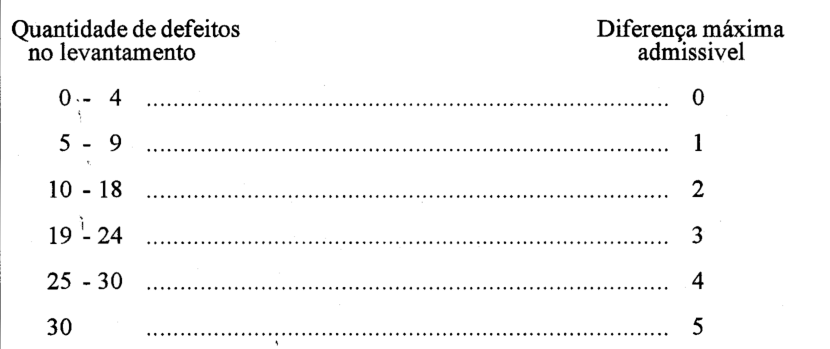
Tabela de 6.3: a última linha diz "30" (deveria ser "> 30") e se sobrepõe à linha "25 - 30". 7.3 fala em 10 % de todos os subtrechos da Residência, mas a amostra cobre só 10 % dos segmentos — não diz como contar subtrechos não amostrados.
DNER-ES 173/86Método de nível e mira para calibração de sistemas medidores de irregularidade tipo respostaabrir no sitePDF
A fórmula de SB escreve Y_{i−K} com K maiúsculo; o exemplo do Anexo D não dá todos os Y, então VA(1,0) = 9,38 não pode ser reproduzido.
DNER-ES 227/89Agregados sintéticos graúdos de argila calcinada - emprego em obras rodoviáriasabrir no sitePDF
Não tem tabela de classe/grupo nem seção de aceitação: depende da DNER-EM 230, citada como "EM 230/89" (vigente: 230/94). Na EM 230/94 (Tabela 5.1), 0,880 t/m³ é o máximo da classe I e o mínimo da II; a EM 230 (5.2) exige inocuidade para qualquer estrutura de concreto e a Nota 2 da ES só para concreto leve exposto.
DNER-ES 327/97Pavimentação - Pavimento com peças pré-moldadas de concretoabrir no sitePDF
p. 5, 6.2.1 a): glifo sem mapeamento no PDF (caixa vazia), lido como '!' — provável ±
5.1.1: "dimensões mínimas: comprimento de 40 cm" é incompatível com as peças usuais (a NBR 9781 fixa 40 cm como comprimento máximo). Seções 3 e 4.1 dizem "rejuntadas com asfalto" e 5.3.4.4 (p. 5) pedrisco + asfalto; cita a NBR 7584 (esclerômetro) sem usá-la.
6.2.1: "largura da placa" (termo de pavimento rígido); "espessura do pavimento" não definida; sem frequência nem critério para o colchão de areia e a sub-base.
DNER-ES 345/97Edificações - Fundaçõesabrir no sitePDF
5.4.6.1 b: "quando a taxa nominal de trabalho da estaca for 10 t" — falta o operador (provavelmente ≤ 10 t).
7.2.2: a "contratante" fica obrigada a demolir e refazer (deveria ser a executante).
5.3.4.1: a alínea "b)" se repete (Strauss e simplex). 5.4.6.1 b (p. 4): "quando a taxa nominal de trabalho da estaca for 10 t" — falta o "≤".
7.2.2: "Ficará a contratante obrigada a demolir e refazer" — deveria ser a executante (contratada).
DNER-ES 346/97Edificações - Estruturasabrir no sitePDF
5.2.21 cita ABNT NBR 6118/90; o resto da norma cita NBR 6118/80. 5.2.22 a chama o fck de "resistência de dosagem".
5.2.21 cita a NBR 6118/90; nas demais passagens é a NBR 6118/80. 5.2.22 a (p. 4): "resistência de dosagem aos 28 dias – (fck)" — a resistência de dosagem é fcj, não fck. A aceitação do concreto só remete ao 15.1.1 da NBR 6118/80 (sem a tabela de ψ6).
DNER-ES 348/97Edificações - Coberturasabrir no sitePDF
O item "5.16" (telhas cerâmicas) aparece depois do 5.2.18 (deveria ser 5.2.19); a ES não tem seção de aceitação e rejeição (p. 4).
DNER-ES 349/97Edificações - Impermeabilizaçãoabrir no sitePDF
5.2.17: "pontos de fusão médio de 84º e 94º C" (ambíguo; interpretado como faixa). Seção 6 (p. 6) começa em 6.1.2 e 6.3.1 fala em "serviços preliminares" (copiado da ES 344).
5.2.17: "pontos de fusão médio de 84º e 94º C" é ambíguo; 120 % de saturante daria 726 e 924 g/m² para os feltros 330 e 420, mas a ES dá 750 e 950. 5.2.17.6 (p. 5): "ASTM 249-60" (provavelmente ASTM D249).
A seção 6.1 começa em 6.1.2; 6.3.1 fala em "serviços preliminares", texto copiado da DNER-ES 344.
DNER-ES 350/97Edificações - Revestimento de pisosabrir no sitePDF
5.7 atribui o Proctor Normal à "DNER-ES 301/97" (especificação de sub-base, não método de ensaio). Seção 6 (p. 6): numeração 6.2.1.1 → 6.2.2.2 → 6.2.3.3 e "7.3 Aceitação" dentro da seção 6.
5.4.3: 200 × 300 mm = 600 cm², incoerente com "ou área superior a 400 cm²". 5.7 (p. 3) cita a DNER-ES 301/97 como referência de compactação; 5.8 não dá espessura para a solicitação "média".
Itens 6.2.2.2 e 6.2.3.3 deveriam ser 6.2.1.2 e 6.2.1.3; "7.3 Aceitação e rejeição" aparece dentro da seção 6, antes da "7 Critérios de medição".
DNER-ES 351/97Edificações - Revestimento de paredesabrir no sitePDF
Argamassa alternativa para ladrilhos: 1:2:3 em 5.18.6 e 1:3:3 "nas paredes" em 5.18.9. Chapisco 1:3 (5.13) contra 1:2 na DNER-ES 350/97 (5.5.3).
Quadro de 5.22.3 (grampos por forra): faixas com lacunas (0,20–0,21; 0,40–0,41; 1,00–1,01) e limites 0,40, 1,00 e 2,00 sem faixa. Seção 3 (p. 1): "é adotada a definição de" incompleto.
DNER-ES 352/97Edificações - Forrosabrir no sitePDF
5.3: "suspensão a um máximo de 1,40 m" é ambíguo (espaçamento entre pontos ou comprimento do pendural).
DNER-ES 353/97Edificações - Esquadriasabrir no sitePDF
6.2.3: "51,5 Kg/cm² (10,55 libras/pé quadrado)" — 10,55 lb/pé² = 51,5 kgf/m², não kgf/cm².
6.2.3: "pressão estática de 51,5 Kg/cm² (10,55 libras/pé quadrado)" — 10,55 lb/ft² ≈ 51,5 kgf/m² (≈ 0,5 kPa), não kg/cm² (erro de 10⁴); "19 litros d'água (5 galões) por hora" omite a base de área (por ft²).
DNER-ES 354/97Edificações - Ferragensabrir no sitePDF
Não tem seção "Aceitação e rejeição"; item 5.5 sem formatação; erro de digitação em 5.3 ("de modo a serem evitar").
DNER-ES 355/97Edificações - Vidraçariaabrir no sitePDF
Não tem seção "Aceitação e rejeição". 5.7: calços a 1/3 do vão sem tolerância e "folga da ordem de 3,0 mm a 5,0 mm" não é limite firme.
DNER-ES 357/97Edificações - Instalações elétricas, mecânicas e de telecomunicaçõesabrir no sitePDF
5.20: "3,0 m entre curvas de 90°" — provavelmente redução de 3 m por curva.
5.20: "nos trechos dotados de curvas, este espaçamento será reduzido para 3,0 m entre curvas de 90º" é ambíguo — provavelmente "reduzido de 3 m para cada curva de 90°" (regra da NBR 5410).
DNER-ES 358/97Edificações - Instalações de águaabrir no sitePDF
5.4: declividade mínima de 2 % em canalização de água sob pressão (incomum).
5.4: declividade mínima de 2 % no sentido do escoamento exigida para tubulações de distribuição de água — critério de esgoto (igual ao da DNER-ES 359, 5.4.1).
DNER-ES 359/97Edificações - Instalações de esgoto e águas pluviaisabrir no sitePDF
7.3.1: prova de fumaça com "pressão mínima de 25,0 m de coluna d'água" (usual: 25 mm c.a.; a prova com água é de 3 m.c.a.).
5.23.2: dimensionamento do sumidouro pela NBR 7220/87 (agregados); o correto seria a NBR 7229, citada em 5.22.3. Fala em "entrada do efluente na fossa" no item do sumidouro.
7.3.1: prova de fumaça a "pressão mínima de 25,0 m de coluna d'água" — normalmente 25 mm c.a. (≈ 0,25 kPa); 25 m c.a. é 8 vezes a prova de água (3,0 m). Provavelmente mm.
5.23.2: capacidade de absorção "calculada conforme a ABNT NBR-7220/87" (impurezas orgânicas em agregados); o correto é a NBR 7229/93, citada em 5.22.3 e na seção 2.
5.12: lista quebrada — a alínea c) ("tabatinga ou para maior plasticidade, asfalto") é continuação de b); numeração de itens corrompida ("5.1 7", "5.2 5", p. 4 e 6).
DNER-ES 360/97Edificações - Instalação de gásabrir no sitePDF
6.3: "Não será permitido o processo de escapamento por meio de chama…" — falta palavra ("pesquisa de escapamento").
DNER-ES 386/99Pavimentação - Pré- misturado a quente com asfalto polímero - camada porosa de atritoabrir no sitePDF
p. 14: para Cantabro/RT o PDF escreve 'X̄ - ks > valor máximo' (e não + ks); transcrito como está
7.4.2 b: critério do Cantabro (máximo) escrito "X̄ − ks > valor máximo ⇒ rejeitar" — o correto é X̄ + ks. A tabela de amostragem variável de 7.2.1.5 (p. 12) não tem n = 11 (o mesmo nas DNER-ES 387 e 388); RT em kgf/cm² (5,5).
DNER-ES 388/99Pavimentação - Micro pré-misturado a quente com asfalto polímeroabrir no sitePDF
Teor de ligante 4–7 % impresso só na coluna da faixa A; 7.2.1.5 fala em "usinagem do concreto asfáltico" (copiado de outra ES); não há controle de irregularidade.
DNER-ES 390/99Pavimentação - Pré-misturado a frio com emulsão modificada por polímeroabrir no sitePDF
7.1.1 cita DNER-ME 003 para a desemulsibilidade; o método correto, listado nas referências (p. 2), é DNER-ME 063/94.
7.1.1 b cita a desemulsibilidade como "DNER-ME 003" (é a DNER-ME 063, das referências); 7.2.1.1 (p. 11) coleta as amostras de controle da usinagem na "saída da acabadora"; 7.2.1.3 diz "item proposto" sem indicar o item; 7.4.2 b põe teor e granulometria (controle de usina) sob "Na pista"; a tabela de 7.2.1.4 omite n = 11.
DNER-ES 391/99Pavimentação - Tratamento superficial simples com asfalto polímeroabrir no sitePDF
7.1.2 cita DNER-ME 078 para adesividade, mas as referências (p. 2) listam apenas DNER-ME 079/94.
7.1.2 usa a DNER-ME 078 para a adesividade, 5.1.3 d a DNER-ME 059 e as referências só trazem a 079 (o mesmo na DNER-ES 392); a tabela de k de 7.2.3 inclui n = 11 (k = 1,19), ausente na DNER-PRO 277 e nas DNER-ES 390 e 394.
DNER-ES 393/99Pavimentação - Tratamento superficial triplo com asfalto polímeroabrir no sitePDF
Faixas granulométricas: abertura de 1½" impressa "28,1" (é 38,1 mm); faixa A com 3/8" = 0–15, igual à ½" (a DNIT 148 dá 0–5).
Quadro de 5.1.3 e: abertura da 1 ½" como "28,1" (38,1); na faixa A, 1/2" e 3/8" ambas com 0–15 (a DNIT 148 dá 0–5 para a 3/8").
DNER-ES 394/99Pavimentação - Macadame por penetração com asfalto polímeroabrir no sitePDF
A ES é de macadame com asfalto polímero, mas cita as especificações de ligantes convencionais DNER-EM 204/95 e 369/97.
7.2.1 e 7.2.3 mandam usar a "tolerância constante dos quadros do item 5.1.3", mas o quadro traz faixas de quantidade, não tolerâncias; a faixa II-A tem valor único (6 kg/m²); 5.1.4.2 prevê 2 aplicações de agregado e 5.3.1.8 (p. 5) cita uma 3ª camada (III-A) sem texto próprio; 5.1.3 não fixa limite de adesividade, mas 7.1.2 c exige o ensaio.
5.2 c: "2,5 kgf/cm² (30 psi)" — 2,5 kgf/cm² ≈ 35 psi (como na DNER-ES 391); numeração salta de 7.1.1 para 7.1.1.2 (p. 7).
DNER-ES 395/99Pavimentação - Pavimentação - pintura de ligação com asfalto polímeroabrir no sitePDF
7.2.2.1 controla a taxa "pelo ligante residual", mas a tolerância de 5.3.4 (p. 3) é sobre a emulsão diluída em água, e a taxa de diluição não é dada. A tabela de 7.2.2.3 não tem n = 11.
DNIT 015/2006-ESDrenagem - Drenos subterrâneos - Especificação de serviçoabrir no sitePDF
5.1.5 b: faixa do material de envolvimento impossível (≤ 60 % passando na 38 mm e ≥ 85 % passando na 19 mm).
Amostragem de tubos de concreto: ≥ 0,5 % dos tubos com ruptura em ≥ 75 % (5.1.4) contra 4 tubos por lote de 100–200 (7.1, p. 8).
5.1.5 b) (faixa de envolvimento do tubo): máximo de 60 % passando na 38 mm e mínimo de 85 % passando na 19 mm — impossível.
5.1.4 pede amostra ≥ 0,5 % dos tubos (mínimo 2) e 7.1 (p. 8) 4 tubos por lote de 100–200 unidades; "aplicado a não menos que 75 % das unidades fornecidas para ensaio" é ambíguo; "quatros tubos" (p. 8).
7.4 exige fck,est ≥ fck, mas a ES não fixa o fck em nenhum ponto; o cálculo remete à NBR 12655.
DNIT 016/2006-ESDrenagem - Drenos sub-superficiais - Especificação de serviçoabrir no sitePDF
7.4 remete às "condições dos itens 5 e 6" (6 é Manejo ambiental; deveria ser 4 e 5). 5.3.1.3 (p. 4) cita NBR 9794/87 e 9795/87, ausentes da seção 2; 5.3.2 (p. 6) fala em "drenos superficiais" no trecho de drenos cegos.
7.4 remete às "condições gerais e específicas dos itens 5 e 6" (deveriam ser 4 e 5; o 6 é Manejo ambiental) e cita "controle estatístico" não definido.
5.1.3.3 cita a NBR 9794/87 e a NBR 9795/87, ausentes da seção 2. 5.3.2 (p. 6) chama os drenos cegos de "drenos superficiais"; 5.3.2.2 diz que o enchimento é "idêntico aos dos drenos cegos" dentro da própria seção de drenos cegos.
DNIT 017/2006-ESDrenagem - Drenos sub-horizontais - Especificação de serviçoabrir no sitePDF
7.1 manda seguir a NBR 7365 para tubos de PVC, mas a seção 2 a descreve como ensaio de tubo de poliéster com fibra de vidro.
5.1.3: parágrafo sobre permeabilidade do material drenante dentro de "Concreto para as saídas" (repetido da DNIT 016). 7.3 (p. 5) fala de "enchimento das valas, reaterro e compactação" — texto copiado da DNIT 015; drenos sub-horizontais não têm vala.
DNIT 019/2023-ESDrenagem - Transposição de sarjetas e valetas - Especificação de serviçoabrir no sitePDF
Seção 8: b) mede escavações de valas e c) diz que escavações não serão medidas (ressalvando "locais contíguos").
5.3: "comprimento máximo de 3,0 m" para o segmento de transposição parece curto para um acesso; o capítulo 7 não tem "controle da produção".
DNIT 023/2024-ESDrenagem - Bueiros tubulares de concreto - Especificação de serviçoabrir no sitePDF
"Linha dupla ou tripa" (5.3 c, p. 4); 7.1 cita a NBR 6118 (projeto) como norma de controle tecnológico do concreto (o mesmo na DNIT 025 e 026).
"linha dupla ou tripa" (tripla) e "20 Mpa"; o GC de 100 % (5.3 g) não tem método nem frequência. As condições de conformidade (p. 6) estão numeradas 7.2.3, dentro de "Verificação do produto".
DNIT 024/2025-ESDrenagem - Bueiros metálicos sem interrupção do tráfego - Especificação de serviçoabrir no sitePDF
NOTA 2 desaconselha guindaste para manusear as chapas, mas 5.2 lista guincho/grua/Munck; 8.2.3 (p. 6) remete às "seções 4 e 5", mas a execução está na seção 6.
8.2.3 remete às "seções 4 e 5", mas a execução está no capítulo 6; não há critério de resistência, embora 8.1 preveja concreto de revestimento interno; 8.2.1 exige alinhamento, esconsidade, declividade e cotas "conforme projeto" sem tolerância.
DNIT 025/2025-ESDrenagem - Bueiros celulares de concreto - Especificação de serviçoabrir no sitePDF
7.3 exige fck,est ≥ fck, mas não define o cálculo, a formação dos lotes nem o número de exemplares (só remete à NBR 12655, 7.1); NOTA 5 ("separadas por 10 cm") e 5.3.2 k ("a intervalos de 20,0 m") sem tolerância; sem frequência para o controle geométrico (7.2.1). "15 Mpa" (5.1.3).
DNIT 026/2025-ESDrenagem - Caixas coletoras, caixas de ligação e passagem e bocas de bueiros - Especificação de serviçoabrir no sitePDF
Referência b): "Condicionantes ambientas"; 7.3 com a mesma falta de definição do fck,est da DNIT 025.
DNIT 027/2004-ESDrenagem - Demolição de dispositivos de concreto - Especificação de serviçoabrir no sitePDF
Seção 6 diz "Durante a construção dos dispositivos" — texto copiado de ES de construção numa ES de demolição.
DNIT 028/2004-ESDrenagem - Limpeza e desobstrução de dispositivos de drenagem - Especificação de serviçoabrir no sitePDF
6 b): "somente não será tolerada a sua redução através de queima" — redação confusa (o sentido é proibir a queima).
DNIT 029/2004-ESDrenagem - Restauração de dispositivos de drenagem danificados - Especificação de serviçoabrir no sitePDF
5.1 remete à DNER-ES 330/97 sem fixar fck nem controle próprio; 5.2 d): "umidecida".
DNIT 030/2004-ESDrenagem - Dispositivos de drenagem pluvial urbana - Especificação de serviçoabrir no sitePDF
Traço da argamassa de rejuntamento: 1:4 em 5.1.3 e 1:3 em 5.3.1 (p. 4). Permeabilidade: NBR 9596 na seção 2 e NBR 9796/96 em 7.1 (p. 5).
5.1.3 manda rejuntamento com argamassa 1:4, mas 5.3.1, 5.3.2 e 5.3.3 (p. 4) mandam juntas e alvenaria com 1:3; cita DNIT 023/2004-ES e 025/2004-ES, já substituídas.
Seção 6: alíneas d) e e) idênticas; 7.1: "quatros tubos", sem cargas mínimas de compressão diametral nem limites de absorção e permeabilidade; cita NBR NM 67, NM 68 e NBR 12654 antigas; 7.4 (p. 6) fck,est não definido.
DNIT 032/2005-ESPavimentos Flexíveis - Areia-asfalto a quente - Especificação de serviçoabrir no sitePDF
p. 10: o PDF escreve x1 (índice 1, e não i) e (x1 - x) sem barra; transcrito como está
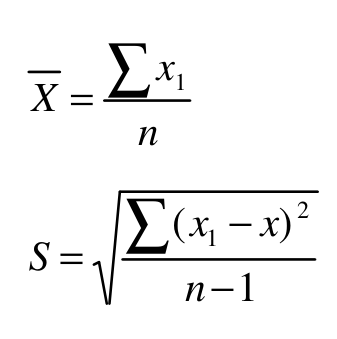
p. 10: o PDF traz '=' nas condições de conformidade (provavelmente ≥ e ≤ perdidos); transcrito como está
7.3 d traz "VDR = 45" (provavelmente VDR ≥ 45) e "0,6 > HS > 1,2 mm (NF P-38)" (provavelmente 0,6 ≤ HS ≤ 1,2 mm; a referência é NF P 98-216).
5.1.2.2 cita "DNER-ME 367" para o material de enchimento; trata-se da DNER-EM 367/97.
7.3 d imprime "VDR = 45" e "0,6 > HS > 1,2 mm" (impossível); 7.5 a (p. 10) com "=" em vez de ≥/≤; 7.3 a: "± 5 % em 10 medidas sucessivas" não explicado; sem frequência para extração, equivalente de areia e fíler (7.1.2, 7.2.1 a).
Quadro de 5.2: "cimento asfáltico % sobre o total da mistura", mas o texto logo abaixo diz que as porcentagens se referem à mistura de areia e fíler = 100 %.
DNIT 033/2021-ESPavimentos flexíveis - Concreto asfáltico reciclado em usina a quente - Especificação de serviçoabrir no sitePDF
Tabela C1 (Anexo C) sem fios, partida em 6 tabelas pela detecção: tabela markdown + recorte m01. Valores transcritos como no PDF; parecem erros do PDF: 10 % RAP/5 %/104 ºC = 193; 40 % RAP/0 %/138 ºC = 138; 50 % RAP/2 %/138 ºC = 243
Limites e frequências (p. 3 a 8) remetem à "DNIT 031-ES vigente", ausente do acervo; sem tolerância para o teor de RAP (4 c) nem limite para a umidade do RAP.
Tabela C1: 193 °C na linha 10 % RAP / 5 % de umidade / descarga a 104 °C quebra a sequência (esperado ~146); outros dois valores fora da sequência no markdown (138 e 243) a conferir no PDF.
DNIT 034/2005-ESPavimentos Flexíveis - Concreto Asfáltico Reciclado a quente no local - Especificação de serviçoabrir no sitePDF
p. 11: o PDF traz '=' (provavelmente ≥ e ≤ perdidos na fonte); transcrito como está
7.3 d: os sinais de VDR e HS aparecem como "=" no PDF; interpretados como VDR ≥ 45 e 0,60 ≤ HS ≤ 1,20 mm (como na DNIT 031-ES).
7.3 c/d: "VDR = 45", "1,20 mm = HS = 0,60 mm" e "(IRI = 2,7)"; 7.5 a com "="; 7.2.1 d (p. 10) exige "estabilidade da fluência", mas o quadro de 5.2 c não tem limite de fluência; 7.2.2 fala em massa específica aparente "máxima" do projeto; p. 4: "IDML = 5 % e IDM = 8 %" sem ≤; o quadro de 5.2 começa em c); sem frequência para a extração.
DNIT 047/2004-ESPavimento Rígido - Execução de pavimento rígido com equipamento de pequeno porte - Especificação de serviçoabrir no sitePDF
Teor de ar ≤ 0,5 % (5.1.10 f), contra ≤ 5 % nas DNIT 065 e 068 e ≤ 4 % na 049.
Abatimento citado pela NBR 7223, ausente das referências (que listam NBR NM 67) — 5.1.10 d e 7.2.1 (p. 10). A referência hh chama a DNIT 050/2004 de "ME"; em 4.3 (p. 3) é EM.
Tabela 1 dá k = 0,842 para n = 32; o Student a 80 % com 31 graus de liberdade é ~0,853 (0,842 é o valor para n infinito) — o mesmo nas DNIT 048, 049, 058 e 068. As expressões usam a média aos 28 dias, mas a idade de controle é "a definida no projeto" (7.2.2.1).
Teor de ar ≤ 0,5 %, valor implausível (as DNIT 065 e 068 dão ≤ 5 %); o mesmo na DNIT 048.
DNIT 048/2004-ESPavimento Rígido - Execução de pavimento rígido com equipamento de fôrma-trilho - Especificação de serviçoabrir no sitePDF
Abatimento atribuído à NBR NM 47 (que é a de teor de ar) em 5.1.10 e à NBR 7223 em 7.2.1 (p. 11); alínea "a)" repetida em 5.1.10; teor de ar ≤ 0,5 % (NBR 11686).
Abatimento "conforme a norma NBR NM 47" (a NM 47 é teor de ar; 7.2.1 cita a NBR 7223); alínea "a)" duplicada; teor de ar ≤ 0,5 %.
DNIT 049/2013-ESPavimento rígido - Execução de pavimento rígido com equipamento de fôrmas deslizantes - Especificação de serviçoabrir no sitePDF
7.2.2.2 exige mínimo de 32 exemplares, então a Tabela 1 de k (n = 6 a 32) só usa o último valor; 7.5.2 (p. 12–13) remete a outro k (Tabela 1 da DNER-PRO 277/97).
7.5.2 manda usar k da "Tabela 1 da DNER-PRO 277/97", enquanto a Tabela 1 da própria ES é a de Student; a largura exige variação < 1 % (p. 11), contra ± 10 % nas DNIT 047/048/068.
DNIT 057/2004-ESPavimento Rígido - Execução de sub-base melhorada com cimento - Especificação de serviçoabrir no sitePDF
pág. 7: ordem de leitura embaralhada pela tabela de largura total (7.3/7.3.1 e fórmulas vinham depois de 7.3.1.2); legenda da fórmula quebrada; 'índie' é erro do PDF (mantido)
5.1.3: "passando na peneira nº 200 50 %" sem dizer se é mínimo ou máximo.
Pulverização ≥ 60 % na mistura em central (5.3.1), mas 7.3.2 (p. 7) exige GP ≥ 80 % sem distinção; 7.3.1.2 manda reensaiar "no caso de todos os valores… superiores a 100 %" dentro da condição GC < 100 %.
Tabela 1 omite n = 11 e grafa "1.08" com ponto; 7.3.1.2 manda reensaiar só "no caso de todos os valores… forem superiores a 100 %" sem dizer o que fazer com valores < 100 %; 5.1.3 (p. 3): "passando na peneira nº 200 50%" sem desigualdade.
5.3.1 exige 60 % de pulverização na central e 7.3.2 (p. 7) 80 %.
DNIT 058/2004-ESPavimento Rígido - Execução de sub-base de solo-cimento - Especificação de serviçoabrir no sitePDF
7.3.1 a: aceitação automática invertida ("fc ≥ fc7 − Ks"; deveria ser fc7 − ks ≥ fc). 7.3.1 c decide pela média (fc7 ≥ fc), não pelo valor característico.
7.3.1 a) escreve "fc ≥ fc7 − Ks" (desigualdade invertida); 7.3.1 c) compara só a média ("fc7 ≥ fc"); o mesmo "fc" é valor de projeto e resultado; a Tabela 2 (p. 8) omite n = 11.
DNIT 065/2004-ESPavimento Rígido - Sub-base de concreto de cimento Portland adensado por vibração - Especificação de serviçoabrir no sitePDF
Exige 20 exemplares, mas usa k fixo de 0,842 com coeficiente de variação (7.1.2; 7.3.1 p. 7). Consumo mínimo de cimento de 100 kg/m³ (p. 4) — confere com o PDF, mas é atípico.
k fixo de 0,842 independente de n; não diz se os testemunhos são avaliados pela fórmula ou individualmente ("nenhum resultado inferior a 4,6 MPa"); 5.1.3 b (p. 4) cita a NBR 7215 no lugar da DNIT 037.
DNIT 066/2004-ESPavimento rígido - Construção com peças pré-moldadas de concreto de cimento portland - Especificação de serviçoabrir no sitePDF
4.1: "material que não apresente expansibilidade, ou seja, bombeável" (deveria ser "nem seja bombeável"); 5.1.1: dimensões mínimas das peças 40 × 10 × 6 cm (comprimento mínimo de 40 cm é suspeito); 7.2 (p. 5) fala em "largura da placa" num pavimento de peças.
Dimensões mínimas das peças de 40 × 10 × 6 cm, incompatíveis com a NBR 9781 que a própria ES cita; 4.1: "não apresente expansibilidade, ou seja, bombeável"; 7.2 (p. 5) fala em "largura da placa" num pavimento de peças; sem critério de resistência das peças.
DNIT 067/2004-ESPavimento Rígido - Reabilitação - Especificação de serviçoabrir no sitePDF
Remissões erradas: 5.2.1.2 manda reparar juntas esborcinadas "conforme 5.2.2.2" (fissuras rendilhadas; seria 5.2.1.1); 5.4.4 a remete a "5.4.1.1", inexistente (p. 7); 6.2 (p. 8) remete à ES de pequeno porte sem citar o código.
5.2.1.2 remete a 5.2.2.2 para juntas esborcinadas (seria 5.2.1.1); 5.4.4 a) (p. 7) cita "seção 5.4.1.1, alínea (a)" inexistente; 6.2 (p. 8) não nomeia a ES de referência.
DNIT 068/2004-ESPavimento Rígido - Execução de camada superposta de concreto do tipo Whitetopping por meio mecânico - Especificação de serviçoabrir no sitePDF
7.3.2.3: no PDF faltam os 'f' de ctMj, ck,est e ck (glifo perdido: 'fctM, est ≥ ctMj ou ck,est ≥ ck'); restaurados
5.1.3: água com "± 0,30 min" (seria ± 30 min) e "norma DNER 6" (código truncado).
5.1.9: lençol plástico de cura com "limite inferior de 0,5 mm", acima do máximo de 0,3 mm de 5.1.8 a, ao qual remete.
5.2.6: teor de ar ≤ 5 %, contra ≤ 0,5 % nas DNIT 047 e 048, às quais a própria 068 remete. VeBe citado como DNER-ME 94/78 (7.2.1) e DNIT 064/2004-ME (5.2.4, p. 13).
7.3.2.3: "fctM,est ≥ fctMj" (deveria ser ≥ fctM,k); 7.3.2.2 define fc28 "na idade de j dias"; remissões a 7.4.1.1–7.4.1.3, inexistentes (p. 14–15).
5.1.3: "± 0,30 min" (deve ser ± 30 min) e cita a "norma DNER 6".
"norma DNER 35" para o coeficiente de recalque (é a DNIT 055-ME); VeBe citado como "DNER-ME 94/78" (p. 13) e em 5.2.4 como DNIT 064/2004-ME; p. 6: consistência "definida na norma DNIT 049/2004-ES" pelo VeBe, mas a DNIT 049/2013 especifica abatimento ≤ 60 mm.
f_c28 definida como "média … na idade de j dias"; 7.3.2.3 escreve "fctM,est ≥ fctMj" (seria fctM,k); remete aos itens 7.4.1.1 a 7.4.1.3, inexistentes (são 7.3.2.2 a 7.3.2.4); 7.3.2.1 é título vazio.
DNIT 071/2006-ESTratamento ambiental de áreas de uso de obras e do passivo ambiental de áreas consideradas planas ou de pouca declividade por vegetação herbácea - Especificação de serviçoabrir no sitePDF
Tabela 1: valor cultural das leguminosas 56,26 % (75 × 75 = 56,25 %).
Taxa de sementes: "50 a 60 kg/ha" em 5.1 e "200 a 300 kg/ha" em 5.2.
3.14 chama os sulcos de "leivas", contrariando a definição de 3.9.
8 a): "50% (trinta por cento)".
Tabela 1: VC de leguminosas nacionais impresso 56,26 %; 75 % × 75 % = 56,25 % (o mesmo na DNIT 072, Tabela 3).
DNIT 072/2006-ESTratamento ambiental de áreas de uso de obras e do passivo ambiental de áreas íngremes ou de difícil acesso pelo processo de revegetação herbácea - Especificação de serviçoabrir no sitePDF
Tabela 3: valor cultural 56,26 % (75 × 75 = 56,25 %).
Teor de cimento do solo-cimento dos diques: 7 % em peso em 5.2.2 e 5 % em 5.4.2 d (p. 16).
Idade de ruptura dos CPs: 28 dias em 5.2.2 e 30 dias na seção 6 (p. 17), que ainda cita a NBR 6118 (projeto) para controle de solo-cimento.
5.4.1 h: título diz adubação de cobertura "após 60 dias" e o texto 45 dias.
Remete a "item 4 – Execução", que não existe (a execução é 5.4).
8 a): "50% (trinta por cento)".
5.2.2: resistência de 30 kgf/cm² aos 28 dias, mas a seção 6 (p. 17) manda romper aos 30 dias e cita a NBR 6118 (concreto) para "controle assistemático" de solo-cimento; cimento 7 % em peso (5.2.2) × 5 % (5.4.2 d, p. 16).
Título de 5.4.1 h: "adubação de cobertura após 60 dias", mas o texto manda a 1ª aos 45 dias; p. 14 remete a "item 4 – Execução" (a execução está em 5.4); p. 18: "50% (trinta por cento)"; VC de leguminosas 56,26 % (Tabela 3, p. 7).
DNIT 073/2006-ESTratamento ambiental de áreas de uso de obras e do passivo ambiental de áreas consideradas planas ou de pouca declividade por revegetação arbórea e arbustiva - Especificação de serviçoabrir no sitePDF
Dimensão das covas: 0,40 × 0,40 × 0,60 m em 5.2 e 0,40³ (arbustos) / 0,60³ (árvores) em 5.4.1 b (p. 10).
Covas preparadas "com pelo menos 20 dias de antecedência" e mistura "preparada 30 dias antes", no mesmo parágrafo.
Época de plantio "entre outubro e abril" contra "julho a setembro".
Mudas "superiores a 1,20 cm" — provavelmente 1,20 m.
Medição em "três etapas", mas só duas listadas; a segunda fala em "germinação de 100 % das mudas".
Covas: 3.5 (p. 3) e 5.2 (p. 8, com "0,40 c") dão 0,40 × 0,40 × 0,60 m; 5.4.1 b dá 0,40 × 0,40 × 0,40 m para arbustos e 0,60 m³ para árvores. Covas preparadas "com pelo menos 20 dias" × mistura "30 dias antes do plantio" (p. 8); p. 19: "medição em três etapas" com só duas listadas e "germinação de 100 % das mudas".
DNIT 074/2006-ESTratamento ambiental de taludes e encostas por intermédio de dispositivos de controle de processos erosivos - Especificação de serviçoabrir no sitePDF
5.4.2 b cita "DNIT 073/2005-ES" para rip-rap; o rip-rap está na DNIT 072/2006-ES.
Grampos "no mínimo a cada 40 cm" e trespasses "no mínimo de 30 cm": pelo sentido técnico o espaçamento deveria ser máximo.
Seção 8: "50% (trinta por cento)".
Remete os septos de rip-rap à "DNIT 073/2005-ES" (o conteúdo está na DNIT 072/2006); p. 8: "espaçamento mínimo ... a cada 40 cm" e "espaçados de no mínimo de 30 cm" — o sentido é de máximo; p. 11: "50% (trinta por cento)".
DNIT 075/2006-ESTratamento ambiental de taludes com solos inconsistentes - Especificação de serviçoabrir no sitePDF
DNER-ES 337/97 citada como "escoamento" (é escoramento).
"Tantos rolos quantos forem necessários" e espaçamento mínimo de grampos: texto copiado da DNIT 074, sem sentido para concreto/tela.
DNER-ES 337/97 citada como "escoamento" (escoramento); p. 6: "tantos rolos quantos forem necessários" copiado da DNIT 074, sem aplicação a telas e contrafortes; "espaçados de no mínimo de 30 cm" (sentido de máximo).
DNIT 076/2006-ESTratamento ambiental acústico das áreas lindeiras da faixa de domínio - Especificação de serviçoabrir no sitePDF
Texto diz que 60 dB(A) só é atingido a > 270 m sem barreira; a tabela do Anexo A (p. 8) dá 60,00 a 250 m.
Sabiá-do-campo "cresce até três metros" e é árvore de "5 a 8 m" no mesmo item.
"Redução de 22 % / 13 % em relação ao padrão de 60 dB(A)" não bate com a redução de 10 dB(A) citada no mesmo parágrafo.
DNIT 077/2006-ESCerca viva ou de tela para proteção da fauna - Especificação de serviçoabrir no sitePDF
Lei 9.985 datada de 18/07/2004 (é de 18/07/2000).
Pagamento fala em "barreiras artificiais" — texto copiado da DNIT 076.
"Lei nº 9.985 de 18/07/2004" — a Lei do SNUC é de 18/07/2000; controle das telas remetido a "Normas específicas da DNIT" não identificadas (p. 4); o pagamento (p. 5) fala de "barreiras artificiais", copiado da DNIT 076.
DNIT 080/2006-ESPreparação de superfícies de concreto: apicoamento e jateamentos - Especificação de serviçoabrir no sitePDF
Baixa pressão "< 35 MPa (5.000 psi)" (5.3.1 a) e alta "40 a 120 N/mm²" (5.3.2 a) deixam 35–40 MPa sem classificação; unidades misturadas (psi/MPa/N/mm²).
DNIT 081/2006-ESRemoções no concreto - Especificação de serviçoabrir no sitePDF
5.2.2 a: "serrado de 8 a 12 horas após a cura" — seria após o lançamento; a profundidade "igual a ¼ da espessura" não tem tolerância.
DNIT 082/2006-ESFuros no concreto para ancoragem de armaduras - Especificação de serviçoabrir no sitePDF
Item 3 cita "NBR 14287" (é NBR 14827); p. 4: 5.2 diz "espessura de 1,5 hef" e 5.1 "espessura mínima".
Item 3 cita a "NBR 14287" (é a NBR 14827); 5.1 diz "espessura mínima de 1,5 hef" e 5.2 (p. 4) "espessura de 1,5 hef".
DNIT 083/2006-ESTratamento de trincas e fissuras - Especificação de serviçoabrir no sitePDF
5.2 c/d: "comprimento" da junta móvel (deveria ser largura); 5.3 fala em "reação sílica-agregado" e o item 4 em "álcali-agregado".
5.2 c/d fala em "comprimento" da junta móvel (seria largura); 5.3 diz "reação sílica-agregado" e o item 4 (p. 2) "álcali-agregado".
DNIT 084/2006-ESTratamento da corrosão - Especificação de serviçoabrir no sitePDF
5.1 i: concreto novo "não deve ser 20% superior" ao existente — contradiz a DNIT 087-ES (5.6 e), que exige resistência pelo menos 20 % maior que a do substrato.
5.1 h: lógica invertida ("sem fôrmas → concreto convencional; com fôrmas → concreto projetado").
5.1 i ("não deve ser 20 % superior" ao concreto existente) contradiz a DNIT 087, 5.6 e ("pelo menos 20 % maior"); 5.1 h tem lógica invertida (sem fôrmas → convencional; com fôrmas → projetado).
DNIT 085/2006-ESDemolição e remoção de pavimentos: asfáltico ou concreto - Especificação de serviçoabrir no sitePDF
Seção 8, item g): "umidade" — provavelmente "unidade". Transcrito como no PDF.
O título diz "asfáltico ou concreto", mas objetivo e procedimentos cobrem só pavimento de concreto em OAE (o asfáltico aparece só no item 8 c); Resumo e Abstract dizem "desconstituição/unmaking" e o objetivo "reconstituição".
5.4 m: "serradas de 8 a 12 horas após a cura", mas a cura dura 7 dias (5.4 n); 5.4 p "repetir as etapas de d até p" inclui o próprio p; 8 g (p. 5) "cada serviço com sua umidade" (unidade). Sem ensaios nem critérios numéricos de aceitação.
DNIT 086/2006-ESRecuperação do sistema de drenagem - Especificação de serviçoabrir no sitePDF
5.1 a: critérios de declividade deixam casos sem solução (obra ≤ 50 m com declividade < 2 % e obra > 50 m com ≥ 2 %).
5.1 a): a regra de captação não cobre obra ≤ 50 m com declividade < 2 % nem obra > 50 m com declividade ≥ 2 %; 5.1 d) (p. 3): Ø 100 mm, 4,00 m e "comprimento livre inferior de 10 cm" sem tolerância nem sentido; seção 8 (p. 4) resume a conformidade à presença do engenheiro, sem critério de aceitação.
DNIT 087/2006-ESExecução e acabamento do concreto projetado - Especificação de serviçoabrir no sitePDF
Espessura por aplicação: 25 a 40 mm em 5.6 i e 25 a 50 mm em 7 d (p. 5).
Item 4 diz que a aderência é melhor em substrato seco; 5.6 i e 7 b mandam aplicar sempre sobre superfície úmida.
Camada de 25 a 40 mm (5.6 i) × 25 a 50 mm (7 d, p. 5). O item 4 (p. 3) diz que a aderência é melhor em substrato seco, mas 5.6 i e 7 b mandam aplicar sobre superfície úmida.
DNIT 088/2006-ESDispositivos de segurança lateral: guarda-rodas, guarda-corpos e barreiras - Especificação de serviçoabrir no sitePDF
Guarda-rodas das pontes anteriores a 1960: 0,55 m no item 4 (8,30 = 7,20 + 2 × 0,55) e 0,50 m nas p. 2, 3 e 5.
Guarda-rodas anteriores a 1960 com 0,55 m de largura no item 4 a e 0,50 m nas p. 2, 3 e 5.
DNIT 089/2006-ESExecução de pingadeiras por colagem de placas pré-moldadas - Especificação de serviçoabrir no sitePDF
Seção 5: placa com espessura mínima de "seis centímetros", mas a placa comercial indicada é "200/120/6 mm" (6 mm); o peso de 28,8 kg só fecha com 200 × 120 cm × 6 mm — unidades misturadas.
Item 5: espessura mínima de "seis centímetros", mas a placa indicada é "200/120/6 mm" com 28,8 kg, o que só fecha com 6 mm; unidades misturadas.
DNIT 090/2006-ESPatologias do concreto - Especificação de serviçoabrir no sitePDF
4.1.2 e 6.2 exigem 40 MPa contra erosão; as seções 8 e 11 (p. 8–9) especificam fck = 30 MPa.
7.2 repete o texto de 7.1 (sais insolúveis "quando lixiviados"), contradizendo 5.2.1 b (não são removidos).
40 MPa para erosão em 4.1.2 (p. 3) e 6.2 (p. 6), mas as seções 8 m e 11 l listam concreto projetado de 30 MPa; 7.2 (p. 7) repete o texto de 7.1 ("quando lixiviados"), contradizendo 5.2.1 b (sais insolúveis não removidos não degradam).
DNIT 091/2006-ESTratamento de aparelhos de apoio: concreto, neoprene e metálicos - Especificação de serviçoabrir no sitePDF
Remissões internas erradas: 5.2.2 remete a "Item 6.1"; 5.2.4.2–5.2.5.2 remetem a "6.2.4.1"/"6.2.3.1" (p. 5) — seriam 5.1, 5.2.4.1, 5.2.3.1. 5.1.2 a (p. 3): fissura tolerável de "2 a 3 mm de comprimento" (provavelmente largura).
Remissões internas erradas: "Item 6.1" (p. 4) e "6.2.4.1"/"6.2.3.1" (p. 5) — seriam 5.1, 5.2.4.1 e 5.2.3.1; 5.1.2 a (p. 3): fissura tolerável de "2 a 3 mm de comprimento" (provavelmente abertura).
DNIT 096/2006-ESDrenagem - Bueiros de concreto tipo mini-túnel sem interrupção do tráfego - Especificação de serviçoabrir no sitePDF
B.7: controle do concreto por CPs aos 7 dias "de acordo com a NBR 6118" (norma de projeto; o ensaio é a NBR 5739); sem critério de aceitação aos 28 dias.
Subseções numeradas "B.1 … B.10" dentro das seções 4, 5, 7 e 8, diferente do índice (p. 7: 4.1, 5.1–5.4, 7.1–7.3, 8.1–8.2); B.2.2 cortado ("solo argiloso, … cimento e água") por um parágrafo do Álbum e pelo B.1 intercalados.
B.7: "controle assistemático" pela NBR 6118 com CPs de 7 dias (figura que a NBR 6118 atual não tem), sem dizer como a relação 7 × 28 dias entra na aceitação; sem seção de conformidade; B.8 (p. 6) só dá tolerância de 1 % da seção, nenhuma para alinhamento, esconsidade, declividade ou cotas.
DNIT 098/2007-ESPavimentação - base estabilizada granulometricamente com utilização de solo laterítico - Especificação de serviçoabrir no sitePDF
7.4.1 remete à alínea "b" de 5.3 para LL e IP, mas esses limites estão na alínea "c".
Tabela de faixas: abertura da nº 10 impressa "2,09" (é 2,0 mm); a mesma tabela escreve os limites na ordem máx–mín.
Abertura da nº 10 escrita "2,09" mm; o quadro de tolerâncias não inclui a peneira de 2".
7.4.1 remete à "alínea b do item 5.3" (LL/IP estão em 5.3 c); 5.1 (p. 2) exige "expansão inferior a 0,2 %" (até 0,5 % com expansibilidade < 10 %) e 7.4.2 diz "sempre no máximo 0,5 %"; 7.2.2 Nota 1 (p. 5) truncada.
DNIT 099/2009-ESObras complementares - cercas de arame farpado - Especificação de serviçoabrir no sitePDF
7.1.2 c dá resistência à flexão dos mourões em "kg"; 5.3.5 (p. 3) aceita grampo ou braçadeira de arame para qualquer mourão, mas 7.2.4 b (p. 5) exige grampo na madeira e arame liso no concreto.
Flexão dos mourões "≥ 60 kg" / "150 kg" (unidade kgf); 5.3.5 (p. 3) permite grampos ou braçadeiras de arame liso em qualquer mourão, e 7.2.4 b (p. 5) exige grampo na madeira e arame liso no concreto. Remete o controle estatístico à DNIT 011 sem critério próprio.
DNIT 100/2018-ESObras complementares - Segurança no tráfego rodoviário - Sinalização horizontal - Especificação de serviçoabrir no sitePDF
Prazo da retrorrefletividade inicial: até 15 dias após a aplicação (p. 8), até 72 h após a liberação ao tráfego (p. 9) e 7 dias após a abertura ao tráfego (7.5, p. 12).
Escolha do material: Tabela 1 indica termoplástico extrudado acima de VMD 5000; Tabela 2 indica tinta EM-276 entre 5000 e 10000. Nota (3) da Tabela 2 fala em "trechos de menor VMD" para > 30000.
Termoplástico pré-formado "sem qualquer tipo de adesivo" (4.3 e, p. 3) e "autocolante" (5.3.2.2 c/d). Espessura de tinta 0,4–0,8 mm (p. 7) contra 0,3–0,5 mm úmida para a acrílica (p. 10).
Alto-relevo com "altura máxima de 8m" (8 mm). NBR 16307 associada à geometria de 15 m (p. 9; é a de 30 m); NBR 14723 citada como 2013 (5.4) e 2005 (7.4.3, p. 12).
Prazo da retrorrefletividade inicial em três versões: 5.4 (p. 8) "em até 15 dias após a aplicação", p. 9 "até 72 h após liberação ao tráfego" (48 h para laminado), 7.5 (p. 12) "sete dias após a abertura ao tráfego".
Tabela 2: faixas de VMDa sobrepostas ("10000 a 20000" e "acima de 10000"); a Tabela 1 (termoplástico acima de 5000) conflita com a Tabela 2 (tinta até 10000); p. 11: alto-relevo com "altura máxima de 8m" (8 mm); 7.4.3 (p. 12) cita a NBR 14723:2005 e 5.4 a edição 2013.
DNIT 101/2009-ESObras complementares - Segurança no tráfego rodoviário - Sinalização vertical - Especificação de serviçoabrir no sitePDF
5.4.2: gabarito de 4,5 m "exclusivamente para nos trechos urbanos fora da circunscrição do DNIT" — redação truncada e contraditória.
DNIT 102/2009-ESProteção do corpo estradal - Proteção vegetal - Especificação de serviçoabrir no sitePDF
8 b fala em "germinação de 100 % das mudas"; 7.4 exige "controle estatístico" sem definir plano.
A cobertura de 100 % em 120–150 dias é só "usual", sem critério de aceitação; 7.4 fala de "resultados do controle estatístico" que a ES não define.
DNIT 103/2009-ESProteção do corpo estradal - Estruturas de arrimo com gabião - Especificação de serviçoabrir no sitePDF
Tolerância: ±1 % nas caixas (7.2.1) contra ±10 % no muro (7.3, p. 5).
5.1.2 exige para a pedra requisitos de brita para concreto e peso específico ≥ 2.300 kg/m³, mas 7.1.2 (p. 4) aceita controle visual ou testes expeditos.
4.2.2: diafragmas do colchão Reno "colocados durante a montagem" e logo depois "unidos durante a fabricação".
7.4 manda fazer controle estatístico pela DNER-PRO 277, mas a ES não dá critério estatístico.
DNIT 104/2009-ESTerraplenagem - Serviços preliminares - Especificação de serviçoabrir no sitePDF
5.3.5 considera vegetação "até 15 cm" como pequena; 8.1.1 e 8.1.2 (p. 8) medem árvore de exatamente 0,15 m como grande.
DNIT 106/2009-ESTerraplenagem - Cortes - Especificação de serviçoabrir no sitePDF
7.4 tira a conformidade só de 7.1 e 7.2 (sem 7.3); 8.1 (p. 9) remete a aceitação à 7.3 (seria 7.4); 8.1.5 d (p. 10) cita 5.3.1 para massas excedentes (seria 5.3.9).
7.4 diz que a conformidade é inferida de 7.1 e 7.2, deixando de fora 7.3 (tolerâncias geométricas).
DNIT 108/2009-ESTerraplenagem - Aterros - Especificação de serviço (com incorporação da Errata 1)abrir no sitePDF
5.1 c exige ISC ≥ 2 % no corpo do aterro, mas 7.1 não dá frequência de ISC para o corpo; 7.4 (p. 9) manda controlar ISC mínimo, mas a camada final não tem mínimo (5.1 d: "melhor capacidade de suporte"). 7.3.1 a: "variação máxima da altura máxima de ± 0,04 m".
5.1 c (p. 3) exige ISC ≥ 2 % e expansão ≤ 4 % no corpo do aterro, mas 7.1 só fixa frequência de ISC para a camada final (7.1 e); 5.1 d não fixa o ISC mínimo da camada final, embora 7.4 mande controlá-lo por estatística; 7.2.3 a só fixa o mínimo de 5 determinações até 1.200/800 m³.
DNIT 112/2009-ESPavimentos flexíveis - Concreto asfáltico com asfalto-borracha, via úmida, do tipo "Terminal Blending" - Especificação de serviçoabrir no sitePDF
o PDF traz x_1 no somatório (provável erro, deveria ser x_i); transcrito como está
7.2.1 a cita "DNER-ES 053/94" para o teor de ligante; trata-se do método DNER-ME 053/94.
Tabela 3: a linha "Nº 10 – 1,18 mm" está trocada; 1,18 mm corresponde à peneira nº 16 (a nº 10 é 2,0 mm).
5.4.2 e 5.4.3: ligante a 170–180 °C e agregados 10–15 °C acima dele "sem ultrapassar 180 °C" — só possível com ligante a 170 °C e agregados a exatamente 180 °C.
7.2.1 a cita "DNER-ES 053/94" (é a DNER-ME 053/94); tolerância "± 0,3, dependendo dos limites de projeto" ambígua; o fator k de correção do teor (4 b, 7.2.1 a) não tem forma de aplicação; GC (7.2.2) sem frequência; 7.5 (p. 11) cita k "tabelado" sem a tabela; duas alíneas "d)" na seção 2.
DNIT 114/2009-ESPavimentação rodoviária - Sub-base estabilizada granulometricamente com escória de aciaria - ACERITA - Especificação de serviçoabrir no sitePDF
o PDF traz x_1 no somatório (provável erro, deveria ser x_i); transcrito como está
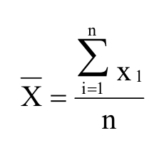
Fórmula da média: o somatório traz x₁ em vez de xᵢ (o mesmo na DNIT 115/2009 e 112/2009).
Los Angeles citado como "DNER-ME 035/94" (referências, p. 2: 035/98); ISC da ACERITA® e da mistura remetido à DNER-ME 129/94 (compactação), o ensaio de ISC é a DNER-ME 049/94.
Grau de compactação: "mínimo de 100 %" em 5.3 (p. 4–5) e "GC > 100 %" (desigualdade estrita) em 7.2.1; grafado "CG".
5.1.1: ISC do insumo "(DNER-ME 129/94)" (seria a 049); 5.1.3 expansão "máxima 1,0 %" × 7.4.2 "inferior a"; 7.2.1 "GC > 100 %"; 5.3.6 fala em "argila" onde seria solo; o teor de ACERITA® (50–80 %) só aparece no Resumo.
DNIT 115/2009-ESPavimentação rodoviária - Base estabilizada granulometricamente com escória de aciaria - ACERITA - Especificação de serviçoabrir no sitePDF
o PDF traz x_1 no somatório (provável erro, deveria ser x_i); transcrito como está
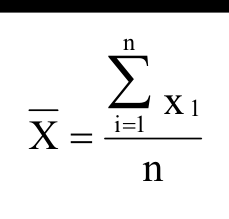
Fórmula da média: o somatório traz x₁ em vez de xᵢ.
ISC da ACERITA® e da mistura remetido à DNER-ME 129/94 (compactação); o ensaio de ISC é a DNER-ME 049/94.
Grau de compactação: "mínimo de 100 %" em 5.3 (p. 5) e "GC > 100 %" em 7.2.1; grafado "CG".
5.1.1: ISC do insumo "(DNER-ME 129/94)" (seria a 049); 5.1.3 expansão "0,5 %" × 7.4.2 "inferior a"; 7.2.1 (p. 7) "GC > 100 %"; o teor de ACERITA® só aparece no Resumo.
DNIT 117/2009-ESPontes e viadutos rodoviários - Concretos, argamassas e calda de cimento para injeção - Especificação de serviçoabrir no sitePDF
págs. 10-11: ordem de leitura embaralhada pelas tabelas de largura total; legenda de símbolos quebrada; Tabela 4 sem a fórmula (imagem na célula) e sem f1/fi — transcritas do PDF. PDF, Tabela 4: 'Se maior que Ψ6·f1' transcrito como está
Referências (p. 3) listam "NBR NM 45 – pasta de consistência normal", mas 7.1.1 cita a NBR NM 43 (a correta para o ensaio).
Tabela 3, vida útil da calda: "índice de fluidez maior que 18 s durante 30 min", contra fluidez ≤ 18 s na injeção (parece invertido).
Tabela 1: condição de preparo C ausente e condição B com duas faixas (C10–C20 e C10–C25).
Tabela 3 (vida útil da calda): "Índice de fluidez maior que 18 segundos, durante o período de 30 minutos" contradiz o limite de no máximo 18 s imediatamente antes da injeção (deveria ser "não maior"). Tabela 4: "Se maior que Ψ6·f1" é ambíguo (a NBR 12655 diz "não menor que ψ6·f1"). 7.3.1: valores iniciais de Sd (4,0 e 5,5 MPa) são critério de dosagem e aparecem na seção de aceitação.
DNIT 118/2009-ESPontes e viadutos rodoviários - Armaduras para concreto armado - Especificação de serviçoabrir no sitePDF
5.1: "kgf/mm² = kN/cm²" — unidades não equivalentes.
Material com "contraprova única" (7.3.1 a) × emendas e telas com "duas contraprovas" (7.2, 7.3.1 b); em 7.2 a inequação A ≤ 0,1 + (σmáx/2)·φ·10⁻⁴ define A como "alongamento de 10 diâmetros, em mm" sem unidade explícita de cada termo.
DNIT 119/2009-ESPontes e viadutos rodoviários - Armaduras para concreto protendido - Especificação de serviçoabrir no sitePDF
5.1.1 a: fios com "diâmetros internos variando de 4,0 a 9,0 mm" (deveria ser diâmetro nominal).
5.1.1 d: bainha especificada para 15 kgf/cm² (≈ 1,5 MPa), mas a DNIT 123-ES (5.3.2 e) prevê injeção de 1,5 a 2,0 MPa.
5.1.1 a: fios com "diâmetros internos variando de 4,0 mm a 9,0 mm" (nominais); barras: seção 4 "da ordem de seis metros" × 5.1.1 c "de 6,0 m a 12,0 m".
DNIT 120/2009-ESPontes e viadutos rodoviários - Fôrmas - Especificação de serviçoabrir no sitePDF
5.5 b: fundo de vigas com vão > 6 m tem prazo de 10 dias, menor que os 14 dias de vãos de 3 a 6 m. Prazos de retirada diferentes da DNIT 124-ES (7.1): 12 h / 7–14 dias contra 3 / 14 / 21 dias.
7.2 remete tolerâncias de fôrma e desmoldagem à "seção 11 da NBR 6118:2007" (estão na NBR 14931).
5.5 b: vão maior que 6 m com 10/7 dias, menos que os 14/7 dias do vão de 3 a 6 m (o ACI 347 dá 21/14 dias para vão > 20 ft); 7.2 remete as tolerâncias à "seção 11 da NBR 6118:2007", que trata de ações (as de execução estão na NBR 14931).
Prazos de desforma: a DNIT 120 (5.5) usa os do ACI 347, com 12 h para faces laterais; a DNIT 124 (7.1) exige 3/14/21 dias.
DNIT 121/2009-ESPontes e viadutos rodoviários - Fundações - Especificação de serviçoabrir no sitePDF
5.3.4 d: extremidade do tubo "deve ser aberta" e logo em seguida admite o fechamento da ponta com rolha.
DNIT 122/2009-ESPontes e viadutos rodoviários - Estruturas de concreto armado - Especificação de serviçoabrir no sitePDF
5.1.1 e 5.3.1: "tetraclorofluoretileno" (o material é politetrafluoretileno, PTFE). 7.2.3 e 7.3 (p. 6) citam DNER-ES 325/97, substituída pela DNIT 047/2004-ES que a própria norma usa em 5.2.
Dreno ≥ 15 cm para fora da estrutura (5.1.5 a) contra 10 a 15 cm (5.3.5 a, p. 5).
Drenos: 5.1.5 a pede comprimento excedente mínimo de 15 cm e 5.3.5 a 10 a 15 cm saliente; pingadeiras: 5.1.5 c fala em "pequenas saliências triangulares" e 5.3.5 b exige mais de 5 cm de altura e 30 cm de largura; "tetraclorofluoretileno" (5.1.1, 5.3.1) — o correto é politetrafluoretileno (PTFE).
DNIT 123/2009-ESPontes e viadutos rodoviários - Estruturas de concreto protendido - Especificação de serviçoabrir no sitePDF
5.3.2 b: limites na pós-tração 0,90 fpyk (RN) e 0,88 fpyk (RB) — conferir com a NBR 6118 vigente (que dá outros valores).
5.3.2 e: velocidade de injeção "6,0 m/seg a 12,0 m/seg" (provavelmente m/min).
5.3.2 e: velocidade de injeção "de 6,0 m/seg a 12,0 m/seg" (m/min).
DNIT 124/2009-ESPontes e viadutos rodoviários - Escoramentos - Especificação de serviçoabrir no sitePDF
Estacas do escoramento cortadas "no nível do terreno" (5.4.4) e "pelo menos 50 cm abaixo do terreno acabado" (7.1, p. 5). 5.4.1 repete a alínea "a)" depois de "d)".
5.4.4 manda cortar as estacas do escoramento "no nível do terreno" e 7.1 (p. 5) "pelo menos 50 cm abaixo"; 5.4.1 tem duas alíneas "a)".
DNIT 137/2010-ESRegularização do subleito - Especificação de serviçoabrir no sitePDF
7.5: "Quando especificado um valor máximo a ser atingido, devem ser verificadas as seguintes condições:" e nada vem depois; "k — coeficiente tabelado" sem a tabela (o mesmo nas DNIT 138, 139, 151 e 152); 7.2 b (p. 4) só fixa o mínimo de 5 determinações de GC para ≤ 1.250 m³.
DNIT 138/2010-ESReforço do subleito - Especificação de serviçoabrir no sitePDF
Expansão: o preâmbulo de 5.1 remete à DNIT 108-ES (≤ 2 %), mas a alínea 5.1 c fixa ≤ 1 %. Adotado ≤ 1 %.
O caput de 5.1 diz expansão "≤ a 2 %" (como a DNIT 108) e a alínea 5.1 c "≤ 1 %".
DNIT 139/2010-ESSub-base estabilizada granulometricamente - Especificação de serviçoabrir no sitePDF
Umidade para compactação: 5.3 d admite de −2 a +1 ponto percentual em relação à ótima; 7.2 a admite ± 2 pontos.
5.3 d (p. 3–4) admite umidade de −2 a +1 p.p.; 7.2 a admite ± 2 p.p.
DNIT 140/2022-ESES: Pavimentação - Sub-base de solo melhorado com cimento - Especificação de serviçoabrir no sitePDF
7.3.2 b exige o grau de compactação "especificado", mas a ES não informa o valor mínimo (a DNIT 142-ES, similar, fixa ≥ 100 %).
7.3.2 b manda determinar o GC, mas não fixa o valor mínimo (a DNIT 142, com texto quase idêntico, exige ≥ 100 %).
DNIT 141/2022-ESBase estabilizada granulometricamente - Especificação de serviçoabrir no sitePDF
7.1 cita "ensaio de deformação de ISC (DNIT 179 – IE)"; o ISC é a DNIT 172-ME (a DNIT 179 é deformação permanente). Cita métodos substituídos: DNER-ME 080 (→ DNIT 412), 052/088 (→ 456), 092 (→ 458), 054 (→ 450), 035 (→ 451).
7.2.2 exige no mínimo 15 leituras de deflexão espaçadas de 20 m — impossível em segmentos com menos de ~280 m. Granulometria, LL, IP e LA só aparecem em 5.1 (materiais), sem frequência no controle da execução (7.2); o GC também não tem frequência (a edição de 2010 tinha).
Tabela B1 não tem n = 18, n = 20 nem n > 21. O Anexo A usa "N > 5×10⁶ / N < 5×10⁶" e 5.1 usa "≤" (N exatamente 5×10⁶ não coberto). "EA … quando os limites forem ultrapassados" não diz se um ou os dois.
DNIT 142/2022-ESBase de solo melhorado com cimento - Especificação de serviçoabrir no sitePDF
Tabela A1: 3/8" da faixa A impresso "30 - 65 65".
Tabela A1: a célula 3/8" da faixa A aparece como "30 - 65 65".
DNIT 143/2025-ESEspecificação de serviçoabrir no sitePDF
NOTA 6 fala em "camada de solo melhorado com cimento" numa ES de solo-cimento (texto copiado das DNIT 140/142).
DNIT 144/2014-ESImprimação com ligante asfáltico - Especificação de serviçoabrir no sitePDF
p. 4: o PDF traz 'ou' também na condição de conformidade; transcrito como está
7.5 a: conformidade "X̄ − ks ≥ mín. ou X̄ + ks ≤ máx." — deveria ser "e". Seção 4 b (como nas DNIT 145–149): novo certificado quando passam mais de 10 dias entre fabricação e carregamento, enquanto a DNIT 165-EM usa 3 dias (4.4).
DNIT 145/2012-ESPintura de ligação com ligante asfáltico - Especificação de serviçoabrir no sitePDF
7.5 mistura "valor mínimo especificado" com "valor máximo de projeto"; k "tabelado" sem indicar a tabela; 7.1 a pede Saybolt-Furol a 50 °C para a RR-1C, mas a especificação do material (DNIT 165-EM, Tabela 1) fixa 25 °C.
DNIT 146/2012-ESTratamento superficial simples - Especificação de serviçoabrir no sitePDF
7.2.2: a tolerância de ± 0,2 l/m² só aparece para cimento asfáltico (alínea a); para RR-2C (alínea b) não há valor. A fórmula T = (P2 − P1)/A dá kg/m², mas a tolerância está em l/m² sem indicar a divisão pela massa específica (o mesmo nas DNIT 147 e 148).
7.2.2 a/b: tolerância de ± 0,2 l/m² escrita só para o CAP, não repetida para a RR-2C; 7.5 (p. 6–7) não diz qual tabela de k (o mesmo nas DNIT 147 e 148).
DNIT 148/2012-ESTratamento superficial triplo - Especificação de serviçoabrir no sitePDF
5.1.2 cita "DNER-ME 079/49"; deveria ser 079/94.
DNIT 149/2010-ESMacadame betuminoso com ligante asfáltico convencional por penetração - Especificação de serviçoabrir no sitePDF
Tabela 1 (p. 8) só existia como imagem; valores/faixas mesclados (Espessura, Aplicação de ligante) na coluna da 1ª camada. '20,55' (3/8", A e B, 2ª camada) está assim no PDF — provável 20-55
Tabela de faixas: 3/8" impresso "20,55" (20–55); faixa D da 2ª camada com ½" = "0-100" (provável 90–100); coluna D-1ª desalinhada.
Anexo A, Tabela 1: "20,55" em vez de "20-55" (3/8", faixas A/B, 2ª camada) e "0-100" para ½" (faixa D, 2ª camada); a linha "Aplicação de ligante" não tem unidade; a tolerância do agregado é "-", embora 7.2.2 b (p. 6) diga que as tolerâncias estão nas tabelas.
Tabela 2 (faixa B): emulsão total 9,9–13,2, mas 1ª + 2ª = 4,5–6,8 + 5,4–6,8 = 9,9–13,6; sem tolerância para emulsão ou agregado. 5.3.2 d (p. 5) diz que a 1ª aplicação é "cerca da metade" da emulsão, e a Tabela 2 dá valores diferentes; 5.3.1 descreve uma só aplicação de CAP.
DNIT 150/2010-ESLama asfáltica - Especificação de serviçoabrir no sitePDF
Tabela 2: a última linha repete o rótulo "Taxa de aplicação" (8–13 / 10–16 / 7,5–13,5 % da mistura seca); provavelmente é o teor de emulsão. Não incluída no controle de serviços.
Tabela de faixas: nº 16 impressa "1,21" (1,18 mm) e nº 50 "0,33" (0,30 mm).
Tabela 2: duas linhas "Taxa de aplicação" — a segunda (8–13 / 10–16 / 7,5–13,5 % sobre a mistura seca) provavelmente é o teor de emulsão; aberturas da nº 16 e nº 50 como "1,21" e "0,33" (1,2 e 0,3); o índice (p. 9) chama a Tabela 2 de "Granulometria dos agregados" e o texto de "Características dos agregados".
7.5: "k tabelado" sem a tabela; 7.2.4 (p. 5) sem regra para segmentos ≥ 3.000 m²; "do lama asfáltica" (p. 6) e "1conformes" (p. 7).
DNIT 151/2010-ESAcostamentos - Especificação de serviçoabrir no sitePDF
5.1.2 d: LL e IP "quando ensaiado pela DNER-ME 122" (o IP é pela DNER-ME 082).
DNIT 152/2010-ESMacadame hidráulico - Especificação de serviçoabrir no sitePDF
tabela achatada na extração (sem imagem: o gerador não recorta tabela manual); PDF: 'N° 200 0,74' (seria 0,074) — transcrito como está
Tabela de faixas: nº 200 impressa "0,74" (0,075 mm).
Tabela 3: nº 200 com abertura "0,74" mm; 5.3.1: tolerância da espessura do bloqueio sem o "±" ("4 cm 1 cm").
Tabela 1 × 5.1.1 b: a faixa B (Dmax 3" = 76 mm; camada até 20 cm) é incompatível com "Dmax entre 1/2 e 2/3 da espessura" (limita a camada a 15,2 cm).
DNIT 153/2010-ESPré - misturado a frio com emulsão catiônica convencional - Especificação de serviçoabrir no sitePDF
Teor de betume: a Tabela 2 indica tolerância de ± 2 %; o texto de 7.2.1 (p. 7) indica ± 0,3 %. Adotado ± 0,3 %.
Tabela 2: cabeçalho diz "% mínima passando", mas os valores são faixas (mín–máx).
Tabela 2: tolerância de ± 2 % para o teor de betume × 7.2.1 a (p. 7): ± 0,3 %; 7.2.1 a fala em "ligante residual" e a Tabela 2 em "betume solúvel no CS₂"; cabeçalho "% mínima passando" com faixas.
7.2.3 não diz a quais determinações se aplica o "5 por jornada"; 7.5 "k tabelado" sem tabela; a seção 8 tem duas alíneas "e)".
DNIT 154/2010-ESPavimentação asfáltica - Recuperação de defeitos em pavimentos asfálticos - Especificação de serviçoabrir no sitePDF
5.3.1 d: massa específica aparente seca máxima "referida no ensaio DNER-ME 037" — a ME 037 é o ensaio in situ (óleo), não a referência de máxima. O Resumo anuncia "condições de conformidade e não-conformidade", seção que não existe; nenhuma frequência; 7.2 a reduz o controle a "visual".
DNIT 159/2011-ESPavimentos asfálticos - Fresagem a frio - Especificação de serviçoabrir no sitePDF
7.3: cobre cortes "superiores a 5 cm" (± 5 %) e "inferiores a 5 cm" (± 10 %) — 5 cm exatos indefinido; sem frequência mínima para o caimento transversal e sem tolerância para valores individuais de espessura.
DNIT 166/2013-ESPavimentação - Reciclagem de pavimento a frio "in situ" com adição de espuma de asfalto - Especificação de serviçoabrir no sitePDF
Faixa granulométrica: nº 200 com máximo 20, acima do máximo 17 da nº 100; tolerância da 2" impressa "- 7".
Tabela 1: tolerância da 2" impressa "- 7"; a nº 200 (5–20) tem máximo maior que a nº 100 (7–17) — incoerente (o mesmo na DNIT 169).
Cura dos CPs de RT: 72 h a 60 °C (7.2.1 e), enquanto a DNIT 169 usa 72 h a 40 °C para o mesmo tipo de mistura; largura "até 10 cm em excesso" (7.3 a) sem dizer se a falta é tolerada.
DNIT 167/2013-ESPavimentação - Reciclagem profunda de pavimentos "in situ" com adição de cimento Portland - Especificação de serviçoabrir no sitePDF
A Tabela 1 exige 100 % passando na 2" (faixas I e II) e 5.3.1.2 b diz "pelo menos 95 %"; 7.2.1.2 c (p. 9) cita a DNER-ME 181/94 (método de solo–cinza volante–cal) para a RT; 7.4.2 usa a Tabela 1 da DNER-PRO 277, sem n = 11.
DNIT 169/2014-ESPavimentação - Reciclagem de pavimento em usina com espuma de asfalto - Especificação de serviçoabrir no sitePDF
Faixa granulométrica: nº 200 com máximo 20, acima do máximo 17 da nº 100; tolerância da 2" impressa "- 7".
7.2.1: os controles da mistura não têm frequência (só GC, espuma e finura têm); umidade "ótima ou ligeiramente acima" (5.3.4 e) sem tolerância; cura dos CPs a 40 °C × 60 °C da DNIT 166.
DNIT 385/2026-ESPavimentação - Concreto asfáltico com ligante modificado por polímeros elastoméricos - Especificação de serviçoabrir no sitePDF
Anexo E (Degradação Marshall): transcrito como no PDF; diverge do 5.1.2.1 a) (ID_m ≤ 8 %, ID_ml ≤ 5 %) — possível erro do PDF
Estabilidade Marshall: Tabela 4 exige ≥ 700 kgf; o Anexo E (p. 31) indica ≥ 500 kgf. Controle de serviços adotou 700.
Resistência à tração: texto (7.2.4 c) exige ≥ 0,70 MPa; o Anexo E (p. 31) indica ≥ 0,65 MPa. Adotado 0,70.
Dano por umidade induzida: texto (7.2.4 d) exige RRT ≥ 0,75 a cada 5 dias; o Anexo E (p. 31) indica ≥ 0,70 com frequência semanal. Adotado o texto.
Degradação Marshall: o Anexo E inverte os limites de IDm e IDml (IDm ≤ 5 %, IDml ≤ 8 %) em relação ao texto de 5.1.2.1 a. Adotado o texto.
Tabela 4 exige estabilidade Marshall ≥ 700 kgf; o Anexo E (p. 31) diz ≥ 500 kgf "na dosagem". Diferença semelhante na resistência à tração (0,70 × 0,65 MPa) e no dano por umidade (0,75 × 0,70).
Anexo E × texto: dano por umidade "a cada 5 dias" (7.2.4 d) × "semanal"; IDm ≤ 8 % e IDml ≤ 5 % (5.1.2.1 a) invertidos no Anexo E; umidade "< 0,3 %" × "igual ou inferior a 0,3 %" (5.3.4); estabilidade ao armazenamento "DNER-ME 384" (7.1.1 f) × DNIT 384-ME; ± 5 °C do Anexo E sem referência.
7.3.1 manda evitar mistura abaixo de 145 °C, enquanto 5.4.4 admite CAP a partir de 140 °C; 7.3.5 pede controle estatístico "bilateral" para a régua de 3 m, que só tem máximo; GC 97–100 % com controle bilateral X̄ + ks é muito apertado; Tabela D3 tem lacuna de IFI entre 0,08 e 0,09; Tabelas 1/2 usam TNM 25,4/19,1/12,7 mm e a Tabela 5 25,0/19,0/12,5 mm.
DNIT 406/2017-ESPavimentação rodoviária - Base estabilizada granulometricamente com Açobrita® - Especificação de serviçoabrir no sitePDF
transcrito como no PDF: X sem barra de média e 'X1' no somatório (provavelmente X_i)
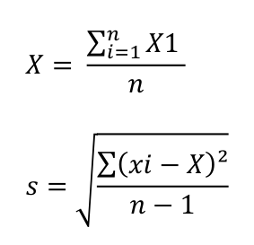
Faixa F: nº 4 = 10–100, mínimo abaixo do da nº 10 (55); a DNIT 141/2022 dá 70–100 para a mesma faixa.
GC: 5.3.6 e 5.3.7 usam o Método B, 5.3.8 (p. 6) e 7.1.1/7.2.1 b o Método C; 7.2.2 (p. 7) escreve "GC > 100 %" e 5.3 mínimo 100 %; expansão ≤ 0,5 % (5.1.2) × "inferior a 0,5 %" (7.4.1).
Tabela 2: faixa F com nº 4 = 10–100 e nº 10 = 55–100 (o passante na nº 10 poderia superar o da nº 4); usa "N < 5×10⁶" e 5.1.2 "≤"; resto de cabeçalho "NORMA DNIT 115/2009-ES 8" no meio do 8.1 (p. 7).
DNIT 407/2017-ESPavimentação rodoviária - Sub-base estabilizada granulometricamente com Açobrita® - Especificação de serviçoabrir no sitePDF
fiel ao PDF: X sem barra e 'X1' no numerador da média (provavelmente X_i)
7.4.3: caractere espúrio 'Î' (símbolo quebrado no próprio PDF)
Expansão: 5.1.2 admite ≤ 1 %, mas o controle em 7.4.1 (p. 6) exige < 0,5 %.
Faixa F: nº 4 = 10–100, mínimo abaixo do da nº 10 (55); a DNIT 141/2022 dá 70–100.
5.1.2: expansão ≤ 1 %; 7.4.1 (p. 6): "< 0,5 %" (parece copiado da DNIT 406); 5.1.2 não exige faixa granulométrica, mas 7.4.2 manda controlar a granulometria e o Anexo A traz a Tabela 2 por N (de base); "GC > 100 %" (7.2.2); resto de cabeçalho "DNIT 115/2009-ES" (8.1); faixa F com o mesmo erro da DNIT 406.
DNIT 420/2019-ESPavimentação - Sol-Cal - Adição de cal para Estabilização de camada de Base - Especificação de serviçoabrir no sitePDF
7.5: a tabela de amostragem variável não tem n = 11 (mesma lacuna da DNER-PRO 277 e da DNIT 421); 7.3 a admite largura "± 10 cm", ao contrário das demais ES do grupo ("sem falta").
DNIT 441/2023-ESCamada granular para fundação de aterros sobre solos moles - Especificação de Serviçoabrir no sitePDF
Nota 4 exige tração nominal ≥ 50 kN/m; a Tabela 2 da mesma página pede ≥ 12, 14 e 19 kN/m. Permeabilidade do geotêxtil em cm/s pela ASTM D4491 (que mede permissividade, s⁻¹).
8.3 diz "vide 8.4" e 8.4 cita a si mesma; a permeabilidade da areia (Tabela 1, p. 4) não aparece na lista de ensaios de 8.1 (p. 5).
8.3 remete o Plano de Amostragem à "subseção 8.4", e 8.4 diz "citado na subseção 8.4" (referência circular; o plano está na 8.3); 8.2.1 fala da "largura da camada granular", mas a alínea b limita a "largura da cava de remoção".
A Tabela 1 exige permeabilidade da areia a cada 1.000 m³, mas 8.1 (p. 5) não lista o ensaio; a Tabela 2 dá gramatura "300" sem ≥/≤; a NOTA 4 exige tração nominal ≥ 50 kN/m, muito acima dos 12/14/19 kN/m da Tabela 2, sem dizer qual prevalece.
DNIT 445/2023-ESTerraplenagem - Revestimento primário - Especificação de serviçoabrir no sitePDF
8.2.2 manda usar "Tabela B1 – Amostragem Variável (Anexo A)" (a tabela é a A1; B1 é a da MCT); referência 2 j (p. 2) cita DNER-PRO 273/97 e 8.2.2 cita 273/96 (correto); GC medido a cada 60 m (8.2.1 d) sem valor mínimo; Tabela B2 (p. 9) traz "Pa-LA" por "Ps-LA".
8.2.1 d manda determinar o GC a cada 60 m, mas a ES não fixa o GC mínimo; 8.2 remete o Plano de Amostragem à "subseção 8.5" (está na 8.4); a equação 1 de 8.2.2 (p. 6) cita "Tabela B1 – Amostragem Variável (Anexo A)" — é a A1.
5.1 c exige granulometria, mas a lista de ensaios de 8.1 (p. 5) não a inclui; 5.1 f vale para todo material, mas 8.1 e só manda ensaiar CBR/expansão nos não lateríticos; a Tabela B2 (p. 9) usa o código "Pa-LA", ausente da legenda.
DNER-IE 004/94Solos coesivos - Determinação da compressão simples de amostras indeformadas - Instrução de Ensaioabrir no sitePDF
7.1 cita '5.10', item que não existe (a norma vai até 5.9): possível erro do PDF (p. 5)
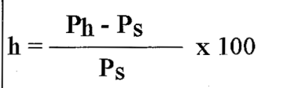
tabela de calibração do anel dinamométrico (Anexo, p. 8), que tinha virado figura (fig01); a tabela e o embed entram pelo 'para' de eq05 (data/formulas). Valores como no PDF; a série sobe de 150 em 150 g, exceto 13 → 1 900, 32 → 4 700, 47 → 6 900 e 64 → 9 400 (esperado 1 950, 4 750, 6 950, 9 450): possíveis erros do PDF
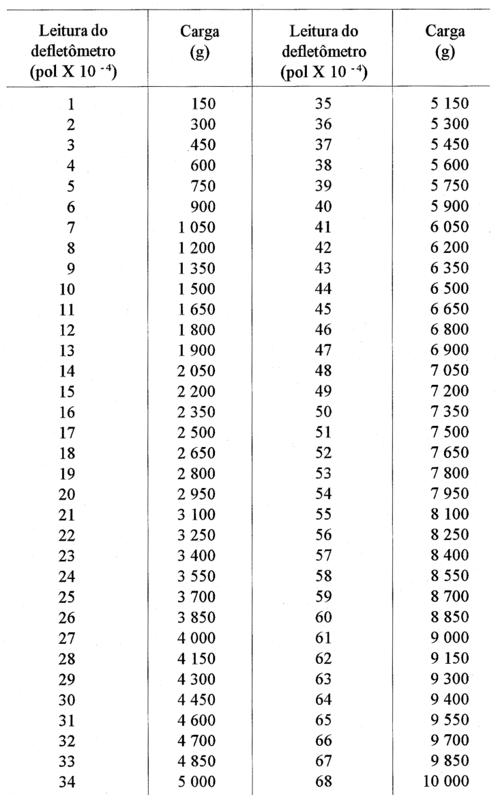
A Figura 4 toma 1 g/cm² como 10⁻¹ kPa (é 0,0981); 7.1 cita o item "5.10", inexistente (é 5.9).
DNER-IE 005/94Solos - Adensamento - Instrução de Ensaioabrir no sitePDF
6.1 a 6.7: três avisos 'Fórmula ausente' e fórmulas quebradas; transcrito pelo PDF (p. 6-8). Unidade de Cv: '10⁻⁴ m²/s' em 6.7 e '(10³m²/s)' em 6.12, como no PDF (possível erro, p. 8-9)
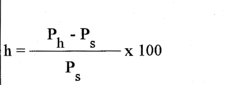
6.10 a 6.12 (p. 9); unidades transcritas como no PDF
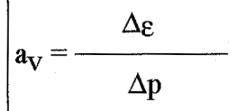
5.5 dá pressão inicial de "0,20 kPa ou 0,25 kPa", enquanto a sequência é 20/25 kPa. 7.4 diz que a reta de permeabilidade relaciona k à pressão média, mas a Figura 9 plota k contra o índice de vazios.
Figura 11: na cápsula 15 a tara e a massa de água estão trocadas (tara 25,52, água 21,51); o primeiro εm impresso 5,46 (3,46); no estágio de 160 kPa cv = 0,730, mas t = 1800 s e Hm = 1,789 dão 0,876 (e o k derivado também); o próprio exemplo tem D/H = 2,44, contra 3 a 4 exigidos em 4.4.
DNER-IE 146/94Defensas metálicas - controle tecnológico durante a fabricação - Instrução de Ensaioabrir no sitePDF
possíveis erros do PDF (p. 2, item 1 e p. 3, 5.1): 'sistmática', 'defesas' (defensas) e 'indefórmável' mantidos como no PDF
DNER-ME 004/94Material betuminoso - Determinação da viscosidade saybolt-furol a alta temperatura método da película delgadaabrir no sitePDF
Título termina em "… a alta temperatura método da película delgada" — o trecho parece copiado da DNER-ME 001/94.
DNER-ME 006/00Emulsões asfálticas - determinação da sedimentaçãoabrir no sitePDF
4.5 chama de "massa A" o béquer com 50 g de emulsão e 4.6 de "B" o béquer com o resíduo; 4.7 redefine A = béquer + bastão + resíduo e B = tara. A fórmula 2(A − B) só vale com as definições de 4.7 e 50 g exatos.
DNER-ME 009/98Petróleo e derivados - determinação da densidade - método do densímetroabrir no sitePDF
A correção da densidade a 20 °C remete à Resolução CNP 6/70 sem reproduzir as tabelas. 6.1 diz "a menos de 0,0005" e 5.2.6 pede aproximação de 0,0005.
DNER-ME 018/94Tinta para demarcação viária - verificação do sangramento no asfaltoabrir no sitePDF
7.4 fixa 25 °C sem tolerância.
DNER-ME 028/94Tinta para demarcação viária - determinação da consistênciaabrir no sitePDF
Tabela 2: 1 050 g aparece como 144 UK, fora da sequência (1 040 g = 140; 1 060 g = 141); "216 g" deve ser 215. Tabela I (p. 8): cabeçalho "75" da segunda metade deve ser 750. 6.1.2 remete ao "item 2.c" (4.c); 6.2.5.1 omite "maior" ("velocidade do que 200 rpm").
DNER-ME 037/94Solo - determinação da massa específica, “in situ”, com emprego do óleoabrir no sitePDF
p. 3: legenda traz 'P' (sem índice), embora a fórmula use P_h; transcrito como no PDF
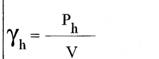
DNER-ME 039/94Pavimento - determinação das deflexões pelo Dynaflectabrir no sitePDF
tabela 1 (imagem) estava depois do título 5.1; legenda 'milímetros de polegadas' transcrita como no PDF (provavelmente 'milésimos de polegada')
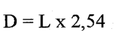
"L — leitura do sensor, em milímetros de polegadas": o correto é milésimos de polegada (D = L × 2,54 em 0,01 mm).
DNER-ME 040/95Prospecção geofísica pelo método de eletrorresistividadeabrir no sitePDF
5.3: arranjo Lee com K = 6π·a; pela teoria do arranjo K = 4π·MN = 8π·b.
DNER-ME 045/95Prospecção geofísica pelo método da sísmica de refraçãoabrir no sitePDF
7.2.9 só cita as dromocrônicas: não traz fórmulas de velocidade nem de espessura das camadas (a ficha usa o método do tempo de interceptação para camadas plano-paralelas).
DNER-ME 046/98Concreto - moldagem e cura de corpos-de-prova cilíndricos ou prismáticosabrir no sitePDF
Tabela 1: desvio de geratriz de 0,03 mm para d = 100 e 0,3 mm para d ≥ 150 — um deles é erro de digitação. A Tabela 3 não cobre abatimento de 180 mm, e 5.2.1.3 (metade das camadas) contradiz a Nota 3 (camadas ≤ 100 mm) para cilindros de 100 mm.
DNER-ME 058/94Microesferas de vidro retrorrefletivas para demarcação viária - determinação da granulometriaabrir no sitePDF
5.8 "repetir 5.1 a 5.7 para cada peneira" é ambíguo. A aparelhagem não tem as peneiras nº 18 e nº 80 exigidas pela DNER-EM 373 nem as nº 12, 14, 16, 18 e 25 da DNER-EM 379; as EM escrevem 840/210 µm e 1,2/0,70 mm para as nominais 0,850/0,212 e 1,18/0,71 mm.
DNER-ME 079/94Agregado - adesividade a ligante betuminoso - Método de ensaioabrir no sitePDF
5 f): a solução Nº 4 manda "levar a 250 ml"; todas as demais diluições levam a 500 ml (provavelmente 500 ml).
DNER-ME 081/98Agregados - determinação da absorção e da densidade de agregado graúdoabrir no sitePDF
3.3: "umidade de volume" (unidade) e "cumprimento submerso" (comprimento).
Tabela 2: a primeira linha traz "retida 33 mm"; na DNER-ME 195/97 (mesma tabela) é 38 mm.
DNER-ME 082/94Solos - determinação do limite de plasticidadeabrir no sitePDF
fórmula já existia no md e confere com o PDF (p. 3); PDF não tem o fator x 100 embora h seja 'em percentagem' — transcrito como está. Legenda corrigida (105 ºC) e 'mais 5%.' do item d) restaurado
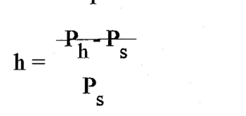
A fórmula da umidade h não tem o "× 100", embora h seja definido em porcentagem. Não fixa o arredondamento do LP.
DNER-ME 083/98Agregados - análise granulométricaabrir no sitePDF
4 b) cita "DNER-ME 035/95"; nas referências a norma é a DNER-EM 035/95.
DNER-ME 085/94Material finamente pulverizado - determinação da massa específica realabrir no sitePDF
A seção 5 salta de 5.1 para 5.3; o arredondamento do resultado não é dado.
DNER-ME 087/94Solos - determinação dos fatores de contraçãoabrir no sitePDF
7.2: RC = Ps/Vs sai em g/cm³ (não divide pela massa específica da água); a norma não fixa arredondamentos.
DNER-ME 093/94Solos - determinação da densidade realabrir no sitePDF
aviso falso: era a tabela de k20 (p. 4) -> tabela markdown. p. 4: 17 ºC com densidade 0,9998 (fora da sequência decrescente; provável 0,9988) — transcrito como no PDF
Tabela de 6.4: massa específica da água a 17 °C impressa como 0,9998 (o correto é 0,9988); o k20 = 1,0006 da mesma linha está coerente.
4 (aparelhagem): "balança com capacidade de 200 kg, sensível a 0,01 g" — provavelmente 200 g. 4.1 cita a DNER-ME 041/63 e 2.1 a 041/94. 6.3: "não diferirem do 0,009".
DNER-ME 107/94Mistura betuminosa a frio, com emulsão asfáltica - ensaio Marshallabrir no sitePDF
A fórmula do fator de correção f = 927,23 h^−1,64 (p. 04) dá 1,024 para 63,5 mm, enquanto a Tabela anexa (p. 05) dá 1,00; a fórmula fica ~2 % acima da tabela em toda a faixa. A densidade aparente remete à DNER-ME 117/94, fora do acervo.
DNER-ME 110/94Microesferas de vidro retrorrefletivas - avaliação do índice de refraçãoabrir no sitePDF
A amostragem remete ao item "2.1.9", que não existe.
DNER-ME 122/94Solos - determinação do limite de liquidez - método de referência e método expeditoabrir no sitePDF
7.1.5 manda usar o "recipiente referido em 3.e"; o recipiente está em 4.e. Em 8.1 a remissão "itens 7 la? 1.6" está corrompida (7.1.1 a 7.1.6).
DNER-ME 148/94Material betuminoso - Determinação dos pontos de fulgor e de combustão (vaso aberto cleveland) (ABNT-NBR 11341)abrir no sitePDF
Adota a ABNT MB-50 sem procedimento nem fórmula; a p. 1 diz "MB-50, de 1989" e a seção 3 (p. 2) "de 1939". Correção barométrica, arredondamento e precisão dependem da MB-50/NBR 11341, fora do acervo.
DNER-ME 163/98Materiais betuminosos - determinação da ductilidadeabrir no sitePDF
Define ductilidade como "a resistência em milímetros", quando se trata da distância (alongamento) na ruptura; o resultado é dado em mm, mas as especificações usam cm.
DNER-ME 180/94determinação da resistência à compressão simplesabrir no sitePDF
p. 7: legenda de m's diz 'massa específica aparente ... em g' (seria massa do material úmido compactado, em g) — transcrito como no PDF
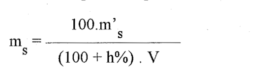
Tabela 2 intitulada "Resiliência" à compressão simples, com Rcs em 2 casas contra a aproximação de 0,1 MPa de 7.3; o Anexo tem 6 umidades contra as "5 umidades" de 7.2.
6.5.5 chama m's de "massa específica aparente" com unidade em g (é a massa da mistura úmida); 6.5.1 converte 0,59 MN·m/m³ em 60 412 kgf·m/m³ (o correto é ~60 163).
DNER-ME 181/94Solos estabilizados com cinza volante e cal hidratada - determinação da resistência à tração por compressão diametralabrir no sitePDF
6.5.2 a 6.5.5 reescritos (6.5.2 truncado pelo OCR; índices perdidos). PDF p. 6: m'_s descrito como 'massa específica aparente ... em g' — pela fórmula é a massa úmida (g); transcrito como está
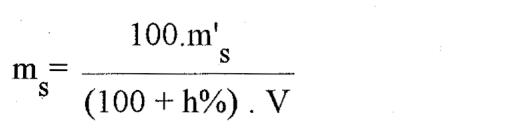
Item 5 p dá velocidade de 0,05 ± 0,02 MPa/s e 7.1 (p. 7) imprime "0,5 MPa ± 0,02". 5 p também diz "5 000 N (5 tf)", mas 5 tf ≈ 49 kN.
DNER-ME 192/97Agregados - determinação do inchamento de agregado miúdoabrir no sitePDF
A massa unitária remete à DNER-ME 152, cancelada e substituída pela DNIT 437/2022-ME.
DNER-ME 195/97Agregados - determinação da absorção e da massa específica de agregado graúdoabrir no sitePDF
p. 5: numerador A no PDF (fisicamente seria B, massa saturada superfície seca, cf. NBR 9937/NBR NM 53); transcrito como no PDF
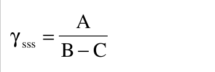
7.1.2: a massa específica na condição saturada com superfície seca (γsss) está impressa como A/(B − C), idêntica à γs; pela definição 3.3 e a Nota 4 deve ser B/(B − C). As definições 3.2 e 3.3 dizem "excluídos os vazios permeáveis", incoerente com o volume B − C.
DNER-ME 197/97Agregados - determinação da resistência ao esmagamento de agregados graúdosabrir no sitePDF
R = (Mi − Mf)/Mi × 100 é a porcentagem de finos produzidos (menor = mais resistente), mas a DNIT 462/2025-EM (6.6) exige "resistência ao esmagamento" ≥ 55 % ou ≥ 65 %, o que só faz sentido para 100 − R. 6.2: "diferença de 3 %" não diz se é absoluta ou relativa.
DNER-ME 201/94Solo-cimento - compressão axial de corpos-de-prova cilíndricosabrir no sitePDF
6.2 omite o valor em mm/min para prensas não hidráulicas e escreve "(140 +70) kPa/s" (provavelmente ± 70). 5.2 diz "moldados e deformados" em vez de desmoldados.
DNER-ME 202/94Solo-cimento - moldagem e cura de corpos-de-prova cilíndricosabrir no sitePDF
6.2.3: tolerância de massa específica de "30 g/cm³" — deve ser 0,030 g/cm³.
DNER-ME 203/94Solo-cimento - determinação da durabilidade através da perda de massa por molhagem e secagemabrir no sitePDF
A Tabela cita AASHTO M 145-73, mas as referências (2.1 b) citam M 145-82.
DNER-ME 216/94Solo-cimento - determinação da relação entre o teor de umidade e a massa específica aparenteabrir no sitePDF
4.1: volume do molde impresso como "100 cm³ ± 10 cm³"; Ø 100 × 127,3 mm dá 1000 cm³ (a DNER-ME 202 diz 1000).
DNER-ME 233/94Tinta para demarcação viária - determinação do cromato de chumbo no pigmentoabrir no sitePDF
5.2.1 cita a "solução 4.2.3", que deveria ser 4.2.a.
DNER-ME 238/94Tinta para demarcação viária - determinação do dióxido de titânio no pigmentoabrir no sitePDF
7.1 fala em TiO₂ "na matéria mineral", mas o resultado (seção 8) é "no pigmento".
DNER-ME 241/94Material termoplástico para demarcação viária - determinação do dióxido de titânio no pigmentoabrir no sitePDF
p. 3: legenda de Vp truncada/errada no PDF ('mililitros de solução pelo menos bimensalmente', repete a Nota; seria o volume de KMnO4 gasto na titulação); transcrito como no PDF
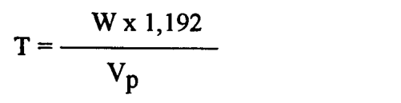
DNER-ME 249/94Material termoplástico para demarcação viária - determinação do teor de microesferas de vidroabrir no sitePDF
p. 3: a fórmula não tem o fator 100, embora o resultado seja em % — transcrito como no PDF; título '5 RESULTADO' quebrado pelo OCR ('S')
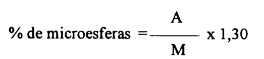
A fórmula "% = A / M × 1,30" não tem o fator 100 (conferido no PDF); não diz como converter o teor sobre a matéria mineral para o termoplástico.
DNER-ME 397/99Agregados - determinação do índice de degradação Washington - IDWabrir no sitePDF
p. 4: 'Os valores de H podem variar de 0 a 100' — provavelmente refere-se a IDw (mantido como no PDF)
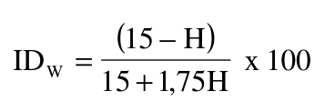
Diz que "os valores de H podem variar de 0 a 100"; quem varia de 0 a 100 é o IDW — H vai de 0 a 15".
DNER-ME 398/99Agregados - índice de degradação após compactação Proctor (IDp)abrir no sitePDF
6 000 g de amostra não cabem no molde com disco espaçador (~2 085 cm³); a norma não diz o que fazer com o material rasado nem qual massa é a base do % passando.
DNER-ME 399/99Agregados - determinação da perda ao choque no aparelho Tretonabrir no sitePDF
Seção 6 define a perda ao choque como a diferença (M1 − Mr) em % de M1, e a ficha do Anexo (p. 05) tem a coluna "material que passa, Mp"; mas a fórmula impressa (p. 03 e 05) é T = Mr/M1 × 100, que dá a fração retida.
DNER-ME 400/99Agregados - desgaste após fervura de agregado pétreo naturalabrir no sitePDF
A fórmula usa Mr₁ (retido na nº 10), mas 5.1 h–i manda lavar só na nº 40; o peneiramento na nº 10 não é descrito, embora a peneira conste da aparelhagem.
Estufa a 111 °C ± 5 °C — valor atípico, provavelmente 110 °C.
DNER-ME 404/00Concreto - determinação da consistência pelo abatimento do tronco de coneabrir no sitePDF
5.10 cita a "Figura 4, no Anexo", mas a figura da medida do abatimento está rotulada "Figura 3"; há duas Figuras 3.
DNIT 036/2004-MEPavimento Rígido - Água para amassamento do concreto de cimento Portland - Ensaios químicos - Método de ensaioabrir no sitePDF
5.2.3: a fórmula "10t/(V − V1)" está dimensionalmente errada (o coerente é t·(V − V1)·1000/Va, = 10·t·(V − V1) para 100 cm³). 5.5.3 (p. 5) define "F = fator do nitrato de prata", mas na fórmula o fator do nitrato é f. A norma não fixa limites.
DNIT 038/2004-MEPavimento Rígido - Selante de juntas - Determinação do índice de fluidez - Método de ensaioabrir no sitePDF
Balança de 1 kg com precisão de 0,1 mg — incoerente. A seção 7 só diz que a fluidez é a alteração do comprimento em mm, sem arredondamento nem critério de repetição.
DNIT 039/2004-MEPavimento Rígido - Selante de juntas - Tração - Método de ensaioabrir no sitePDF
Espessura impressa como "(2,00 + 0,01) mm" (provavelmente ±); 5.2 (p. 3) cita "DNIT 039/2003, 044/2003 e 045/2003"; o símbolo df é usado com dois significados em 7.2 e 7.3.
DNIT 040/2004-MEPavimento Rígido - Selante de juntas - Aderência selante x substrato - Método de ensaioabrir no sitePDF
A fórmula da tensão cita "largura do cunho" (copiada da DNIT 039), que não se aplica a este CP (seção aderida de 12 × 30 mm da Figura 1).
DNIT 041/2004-MEPavimento Rígido - Selante de juntas - Deformação permanente à compressão - Método de ensaioabrir no sitePDF
A fórmula da deformação permanente não tem o fator × 100, embora o resultado seja em %.
DNIT 042/2004-MEPavimento Rígido - Selante de juntas - Rasgamento - Método de ensaioabrir no sitePDF
"Afastamento mínimo do curso das garras de 75 cm"; as DNIT 039 e 040 dizem 7,5 cm.
DNIT 043/2004-MEPavimento Rígido - Selante de juntas - Absorção de água - Método de ensaioabrir no sitePDF
Balança "de 1000 kg" com precisão de 1 mg; banho-maria "± 10 °C" contra os (50 ± 1) °C do ensaio; tubo de comprimento mínimo 30 mm para CP de 75 mm; limitador que ultrapassa a placa em 25 mm (as outras normas dizem 2 mm).
DNIT 055/2004-MEPavimento Rígido - Prova de carga estática para determinação do coeficiente de recalque de subleito e sub-base em projeto e avaliação de pavimentos - Método de ensaioabrir no sitePDF
3.1 dá a unidade de P como "MPa/m (kgf/cm²/cm)", que é a unidade de k; escreve "Westergard" (Westergaard).
DNIT 064/2004-MEPavimento Rígido - Determinação de consistência do concreto pelo consistômetro VeBe - Método de ensaioabrir no sitePDF
4.1 a: "freqüência de 3.000 hertz" — só é coerente como 3 000 vibrações/min (50 Hz).
DNIT 069/2005-MEMaterial termoplástico para sinalização horizontal rodoviária - Determinação da resistência ao óleo diesel - Método de ensaioabrir no sitePDF
Cita "DNER EM-244/94" como especificação do termoplástico; 244/94 é a ME de estabilidade — a especificação é a DNER-EM 372/2000.
DNIT 113/2009-MEPavimentação rodoviária - Agregado artificial - Avaliação do potencial de expansão de escória de aciaria - Método de ensaioabrir no sitePDF
A altura de 116,4 mm (7.1, da ASTM D4792) não bate com o equipamento do item 3 (molde de 17,80 cm − disco de 6,40 cm = 114,0 mm); a sobrecarga de 5.4 (4,542 kg) difere do disco anelar de 2,27 kg (3 f).
7.3 diz "dividida pela leitura inicial" (é a altura inicial); chama de "expansão volumétrica" uma medida de altura; "após 14 dias da condição de submersão" são 7 dias submersos + 7 saturados; cita "DNIT 049/94-ME" (é DNER).
DNIT 130/2010-MEDeterminação da recuperação elástica de materiais asfálticos pelo ductilômetro - Método de ensaioabrir no sitePDF
8.1: "diferirem por mais do que 10 % da média" é ambíguo; não diz o que fazer quando só um ou dois dos três CPs rompem.
DNIT 131/2010-MEMateriais asfálticos - Determinação do ponto de amolecimento - Método do Anel e Bola - Método de ensaioabrir no sitePDF
Seção 6: aproximação de 0,2 °C fixada só para o termômetro ASTM 15C (água); nada para o 16C (glicerina). Não prevê correlação entre resultados em água e em glicerina.
DNIT 133/2025-MEPavimentação - Determinação das deflexões pela Viga Benkelman - Método de ensaioabrir no sitePDF
k é o fator de correção de temperatura em 7.1 (p. 5), mas a legenda do formulário C1 (p. 8) chama k de "constante da viga Benkelman".
Formulário C2 traz L₀, L₂₀, L₃₀, L₄₅, L₆₀, L₁₂₀ e Lf, sem L₂₅ e L₉₀, que 6.8 exige (L₂₅ também em 6.10).
Anexo B (normativo): a correção de temperatura existe só como gráfico, sem equação; as curvas de 15 e 20 cm quase se sobrepõem entre 18 e 25 °C.
DNIT 135/2018-MEPavimentação asfáltica - Misturas asfálticas - Determinação do módulo de resiliência - Método de ensaioabrir no sitePDF
A eq. 6 escreve ΔVins = Hmax − Hf e a eq. 8 ΔVt = Vmax − H0 (deveriam usar V). A nota de 7.4 diz "módulo de resiliência" onde o assunto é o MI; 6.1 cita a DNIT 136/2010; a eq. 13 só vale para ΔH medido no diâmetro com sensor externo — a norma não diz como fica o MR com sensor interno.
DNIT 136/2018-MEPavimentação asfáltica - Misturas asfálticas - Determinação da resistência à tração por compressão diametral - Método de ensaioabrir no sitePDF
Seção 6: exige resultados dentro de ± 10 % da média de 3 CPs, mas não diz o que fazer quando um CP excede (novo conjunto? descarte?). Não fixa arredondamento do resultado.
DNIT 180/2018-MEPavimentação - Misturas asfálticas - Determinação do dano por umidade induzida - Método de ensaioabrir no sitePDF
4 a): exige CPs de 50 a 70 mm de altura; a DNIT 136/2018-ME, que ela manda seguir na ruptura, admite 35 a 65 mm (seção 4).
Não define como obter o volume E do CP (dimensões ou pesagem hidrostática); S exatamente igual a 55 % ou 80 % não é tratado (6.5 f usa desigualdades estritas).
DNIT 183/2018-MEPavimentação asfáltica - Ensaio de fadiga por compressão diametral à tensão controlada - Método de ensaioabrir no sitePDF
Anexo F: o modelo por deformação (N = 3E-11·ε^-3,261, R² = 0,9715) não bate com a própria tabela — como εi = σt/11580 e Δσ = 4σt, o expoente teria de ser igual ao do Δσ (3,398), com k₂ ≈ 7,7 × 10⁻¹².
DNIT 184/2018-MEPavimentação - Misturas asfálticas - Ensaio uniaxial de carga repetida para determinação da resistência à deformação permanente - Método de ensaioabrir no sitePDF
Anexo B: a coluna "deformação plástica específica" não é ΔL dividido por um Hr constante (a razão varia de 135 a 132 mm).
DNIT 228/2023-MESolos - Ensaio de compactação em equipamento miniatura - Método de ensaioabrir no sitePDF
Eq. 5: denominador impresso como "A"; o correto é ms.
Figura A7: o CP 2 tem 68,58 − 18,23 = 50,35 mm (não 51,35); a 3ª tentativa do CP 1 registra 181 g, mas pela eq. 4 seriam 191 g; anota 50 % retido na nº 10, contra o limite de 5 % da seção 6 c.
DNIT 254/2023-MESolos - Compactação em equipamento miniatura - Mini-CBR e expansão - Método de ensaioabrir no sitePDF
Tabela D1 dá valores sistematicamente 0,5 % a 1 % abaixo das eq. 2 e 3, com erros de digitação (53 kgf → 18,8 a 2,5 mm, ~18,2 pelas equações; 94 kgf → 32,0 a 2,0 mm, ~32,6). RIS: a eq. 4 é uma razão, mas o texto diz "em %".
DNIT 258/2023-MESolos - Compactação em equipamento miniatura - Ensaios Mini-MCV e perda de massa por imersão - Método de ensaioabrir no sitePDF
3.11 manda traçar a curva de 10 golpes na série de Parsons, mas 10 não pertence a essa série. A Fig. A11 calcula d' = 75 numa curva "interpolada", enquanto 3.12 manda usar a curva de 10 golpes (com os dados da Fig. A8, ~67). Os Mini-MCV da Fig. A8 parecem lidos no gráfico (7,8/10,5/13,1 contra 8,0/11,0/13,2 pela eq. 3).
DNIT 266/2025-MEAgregados - Determinação do teor de materiais pulverulentos - Método de ensaioabrir no sitePDF
A eq. 1 divide pela massa final m_f, mas 7 a) diz "em porcentagem da massa da amostra ensaiada" (massa inicial).
Tabela 1: faixas de TNM se sobrepõem em 2,36, 4,75, 9,5 e 19 mm (≤ e ≥ no mesmo valor).
DNIT 384/2022-MEEstabilidade ao armazenamento de ligantes modificados por polímero - Método de ensaioabrir no sitePDF
Freezer a −10 °C ± 10 °C na aparelhagem (4 e) e −10 °C ± 5 °C no procedimento (5 e). A seção 6 dá "fundo − topo" por tubo, sem dizer como combinar os tubos nem se o limite vale para o valor absoluto.
DNIT 405/2017-MEControle de compactação em aterros com o equipamento gamadensímetro - Método de ensaioabrir no sitePDF
Seção 8 dá uma só fórmula N0/F, embora o aparelho tenha contagens separadas de densidade e umidade; não diz se as curvas de calibração são em cpm ou razão de contagem.
DNIT 410/2017-MESolos - Prova de carga estática em placa para controle de qualidade na execução de aterros solo-enrocamento - Método de ensaioabrir no sitePDF
Tabelas 1 e 2: os kN correspondem à placa de 30 cm (0,01/0,08 … 0,50 MPa), mas a coluna em MPa foi calculada para a placa de 76,2 cm; o texto diz que o módulo vai até 0,2 MPa e o exemplo para em 0,08.
Unidade de a1 dada como mm/(MN²/m⁴); para EV sair em MPa deve ser mm/(MN/m²). Tabela 3: "kEV (%) ≥ 2" — kEV é razão adimensional e valor maior indica pior compactação.
DNIT 411/2021-MEPavimentação asfáltica - Misturas asfálticas - Massa específica, densidade relativa e absorção de agregado miúdo para misturas asfálticas - Método de ensaioabrir no sitePDF
4 b): picnômetro de 500 mL descrito como "(100 mm³)".
DNIT 413/2021-MEPavimentação - Misturas asfálticas - Massa específica, densidade relativa e absorção de agregado graúdo para misturas asfálticas - Método de ensaioabrir no sitePDF
Tabela 2: o cabeçalho diz "Passante, % / Retida, %", mas as colunas são aberturas de peneira em mm.
3.5: massa específica dada em kg/m³, mas as equações resultam em g/cm³.
7.2 b): chama MEsb de "saturado com superfície seca", mas a fórmula usa a massa seca A.
DNIT 414/2019-MEPavimentação - Solo-Cimento - Dosagem físico-química de solo-cimento - Método de ensaioabrir no sitePDF
Eq. 1: falta o fator × 100, embora o Anexo B apresente ΔV em %.
DNIT 415/2019-MEPavimentação - Mistura asfáltica - Teor de vazios de agregados miúdos não compactados - Método de ensaioabrir no sitePDF
5 b: V = 1000·M/D com D em g/cm³ dá volume 1000 vezes maior; o correto é V = M/D.
DNIT 416/2019-MEPavimentação asfáltica - Misturas asfálticas - Determinação do módulo dinâmico - Método de ensaioabrir no sitePDF
Seção 9 dá |E*| em kPa, mas a Tabela 8 usa MPa; na Tabela 8 o desvio-padrão de φ a 40 °C/25 Hz aparece como 0,0, mas os valores 31,9 e 32,0 dão 0,07.
DNIT 419/2019-MEPavimentação - Solo-Cal - Estimativa do teor mínimo de cal para estabilização química de solo - Método de ensaioabrir no sitePDF
7 b remete ao "item 3" (definições). 7 e prevê 5 teores de 2 % a 10 %, mas o gráfico do Anexo B vai de 1 % a 10 %.
DNIT 423/2020-MEPavimentação - Ligante asfáltico - Fluência e recuperação de ligante asfáltico determinados sob tensões múltiplas (MSCR) - Método de ensaioabrir no sitePDF
Eq. 8 a 11 dividem por 100 e 3200 (tensão em Pa) mas dão o resultado em kPa⁻¹ (o coerente é dividir pela tensão em kPa, como na ASTM D7405). 7.1.2 escreve "εr(100; N)" para 3200 Pa; a numeração pula de 6.6.2 para 6.5.3; o abstract diz "10 and 3200 Pa"; a nota B da Tabela 1 (p. 6) está truncada ("100 Pa-1" = 0,1 kPa⁻¹).
DNIT 424/2020-MEPavimentação - Agregado - Determinação do índice de forma com crivos - Método de ensaioabrir no sitePDF
Tabela 1 usa crivo redutor de 10,5 mm (fração 32–25) que não consta da aparelhagem (4 b).
DNIT 425/2020-MEPavimentação - Agregado - Determinação do índice de forma com paquímetro - Método de ensaioabrir no sitePDF
Definição 3.3 e seção 7 falam em média ponderada das relações c/e; a eq. 2 e o item 8 e usam c médio / e médio (outra conta). Legenda da eq. 1 descreve "n" como soma das porcentagens. Tabela 1 (p. 2) não cobre exatamente 19 mm ("< 19" e "> 19 e ≤ 25").
DNIT 427/2020-MEPavimentação - Misturas asfálticas - Determinação da densidade relativa máxima medida e da massa específica máxima medida em amostras não compactadas - Método de ensaioabrir no sitePDF
Seção 8: tolerância de ± 0,020 g/cm³ aplicada também ao Gmm, que é adimensional. Item 5 b remete à "subseção 5a" para obter a amostra; deveria ser 4.1.
Seção 6 (agregado poroso): "esta massa deve substituir a massa A" — se substituir também o numerador, conta água como mistura; a ASTM D2041 citada troca só no denominador (adotado na ficha).
DNIT 428/2022-MEPavimentação - Misturas asfálticas - Determinação da densidade relativa aparente e da massa específica aparente de corpos de prova compactados - Método de ensaioabrir no sitePDF
6.2.4: as alíneas começam em e), sem a) a d).
Tabela A2: desvio-padrão entre laboratórios (0,015) menor que o de um operador (0,028) — provável erro de digitação.
DNIT 429/2020-MEAgregados - Determinação da porcentagem de partículas achatadas e alongadas em agregados graúdos - Método de ensaioabrir no sitePDF
7 b: fala em "porcentagem total de partículas fraturadas" — texto copiado de outra norma (o ensaio é de partículas achatadas e alongadas).
7 a pede Pᵢ com aproximação de 1 %, mas o Anexo B apresenta 5,84 %, 18,17 % e 7,13 %. O Anexo B não informa a razão dimensional nem o número de partículas, rotula a fração "12,5–9,5" com o % retido na 9,5 mm e mostra 95,86 % onde a soma das parcelas (85,8 + 10,1) dá 95,9 %.
DNIT 432/2020-MEAgregados - Determinação das propriedades de forma por meio do Processamento Digital de Imagens (PDI) - Método de ensaioabrir no sitePDF
4.1 diz que as expressões estão no Anexo B (estão no Anexo A); 7.5 e 7.6 usam ">" e as Tabelas B6/B7 "≥"; no Anexo B o N de uma mesma fração varia conforme a propriedade (4,75 mm com 71, 73 e 75).
DNIT 434/2022-MEPavimentação - Ensaio de fadiga por compressão diametral à tensão controlada em camadas estabilizadas quimicamente - Método de ensaioabrir no sitePDF
Seção 7: %RF é descrita como razão "expressa em MPa", sem dizer se é porcentagem ou fração.
DNIT 437/2022-MEAgregados - Determinação da massa unitária e do volume de vazios de agregados em estado solto e compactado - Método de ensaioabrir no sitePDF
O título de 6.3.2 vai até TNM ≤ 152 mm, mas a Tabela 1 termina em 125 mm; 6.2 a) escreve "TMN" por "TNM"; V é chamado de "volume nominal", embora seja o volume medido na calibração.
DNIT 439/2022-MEPavimentação - Ligante asfáltico - Avaliação da resistência à fadiga de ligantes asfálticos usando varredura de amplitude linear (LAS - Linear Amplitude Sweep) - Método de ensaioabrir no sitePDF
Eq. 14 traz k = 1 + (1 + C2)α, mas o exemplo (p. 15, k = 2,1246) e a AASHTO T 391 usam (1 − C2). Na p. 15 o denominador de A mostra 0,1717 (Cf) no lugar de C2. Eq. 6 (p. 5) sem o operador.
Tabela B1: |G*| a 30 Hz = 6,97E+07; pelo G' da própria tabela seria 5,97E+07. No ΔD₃ (p. 12) o texto mostra γ = 0,31, mas a conta usa 0,52. As frequências da Tabela B1 diferem da lista de 6.2; C1 e C2 do exemplo (0,1136/0,4187) não se reproduzem com os 75 pontos publicados (dão 0,1246/0,3988).
DNIT 443/2023-MEPavimentação - Solos - Ensaio de compactação utilizando moldes tripartidos - Método de ensaioabrir no sitePDF
7.1 l pede amostras de umidade de 250 g, mas o exemplo do Anexo D usa ~70 a 150 g.
Tabela A1: energias nominais — pela eq. 1, 12 golpes do soquete leve no molde de 10 cm dão 5,8 kgf·cm/cm³, não 6,0; a eq. 1 dá a unidade como kgf/cm² e a tabela como kgf·cm/cm³.
DNIT 448/2024-MEPavimentação - Ligante asfáltico - Determinação das propriedades reológicas de ligantes asfálticos usando reômetro de cisalhamento dinâmico - Método de ensaioabrir no sitePDF
Tabela 2: tensão no PAV de 500 kPa (400 a 600); pela ASTM D7175 e pela coerência 5000 kPa × 1 % seria 50 kPa. A fonte aparece como "ASTM D7151" (D7175). A Tabela 3 chama de "CV 2 amostras" o que na ASTM é a d2s %.
DNIT 452/2024-MEAgregado graúdo - Adesividade ao ligante asfáltico - Método de ensaioabrir no sitePDF
Seção 7: o resultado "deve ser o mesmo para as duas amostras", mas só o Anexo A (informativo) diz o que fazer quando divergem (concluir como não satisfatório). Não define se o teor de melhorador é em relação à massa de ligante.
DNIT 126/2017-PADCodificação de Documentos Técnicos de Engenharia - Padronizaçãoabrir no sitePDF
6.3.5: "Cronológico: 203 = A", mas o código do documento termina em 200 = A; a Figura 1 (p. 2) traz "LL.AAA.LL" e o texto usa "LL.BBB.LL"; o Anexo B (p. 8) pula o código 026.
DNER-PRO 002/94Coleta de amostras indeformadas de solos - Procedimentoabrir no sitePDF
3.5 (p. 3): o PDF chama D_i de 'diâmetro externo' na legenda da folga interna (em 3.4 é 'diâmetro interno'); transcrito como no PDF
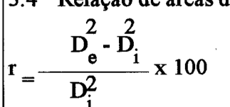
Em 3.5 a legenda chama Di de "diâmetro externo" (é o interno); com os tubos padrão da Tabela 1 a relação de áreas dá 10,5 % (50,8 × 1,24) e 10,7 % (127 × 3,16), acima do limite de 10 % do próprio 5.4.
DNER-PRO 003/94Coleta de amostras deformadas de solos - Procedimentoabrir no sitePDF
A seção "Relatório de campo" está sem número e a lista pula o item b; o título "Processo de perfuração" está corrompido na transcrição.
DNER-PRO 010/79Avaliação estrutural dos pavimentos flexíveis - Procedimento “A”abrir no sitePDF
p. 2–3: σ_t, ε_t, σ_z, σ_adm, d_adm. p. 3: o PDF escreve 'pressão vertical atuante, σ_t' (possível erro — seria σ_z); mantido
Tabela de critérios: "3dadm ≥ da > dadm" deveria ser d0; as linhas de dp > 3dadm e de F̄/AP repetem "aproveitamento total" onde parece caber aproveitamento parcial.
DNER-PRO 011/79Avaliação estrutural dos pavimentos flexíveis - Procedimento “B”abrir no sitePDF
Capítulo 6: escreve T_r = T_f − T_1 onde se trata de Ti.
DNER-PRO 012/95Fotointerpretação aplicada à engenharia rodoviária - Procedimentoabrir no sitePDF
aviso falso; fim de 9.3 (p. 17) está rasgado no próprio PDF: '[...]' = trecho ilegível
DNER-PRO 014/95Mapeamento geológico - geotécnico para obras viárias - Procedimentoabrir no sitePDF
Anexo (p. 14-17): Tabelas 1 a 4 (T1 achatada; T2 a T4 em página girada, tinham virado figuras fig01-fig03) refeitas em markdown + recortes tabm01-tabm04. T2, unidade 5, Areia Gros: '23' e '15' quase ilegíveis no PDF, conferidos pela soma 100 %
DNER-PRO 015/94Inspeção de usinas para misturas betuminosas - Procedimentoabrir no sitePDF
anexo (p. 9-10): Quadro 1 (tabela, página girada) vira tabm01; Quadro 2 (formulário em branco) fica como imagem (fig01 após a renumeração). No item 8 o 1º algarismo das áreas de 12,7 a 50,0 mm está cortado na emenda das tiras do escaneamento: [?]
DNER-PRO 103/94Coleta de amostras de óleos e graxas lubrificantes - Procedimentoabrir no sitePDF
Tabela 2, segunda linha: "1 a 75 tambores" (a primeira já é "1 a 25"). Transcrito como no PDF.
A Tabela 2 aceita 1,0 kg de graxa, contra o mínimo de 2 kg de 3.2.1; as faixas da Tabela 2 se sobrepõem (1–25 e 1–75 tambores; 1–250 e 1–1 050 baldes); a Tabela 1 para em 1 000 recipientes.
DNER-PRO 104/94Amostragem de tinta para demarcação viária - Procedimentoabrir no sitePDF
tinha virado figura (fig01); na 2ª amostra das faixas 501-3200 o 'ª' está apagado no PDF
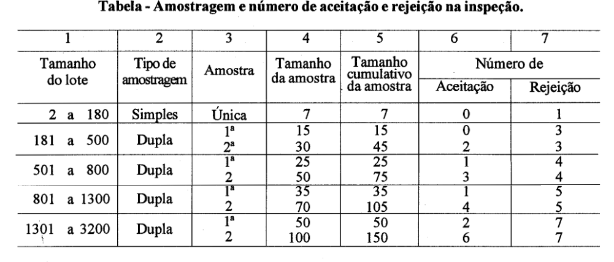
DNER-PRO 159/85Projeto de restauração de pavimentos flexíveis e semi-rígidos - Procedimentoabrir no sitePDF
p. 20: o PDF traz A' = A + A'E na 1ª condição (transcrito como está)
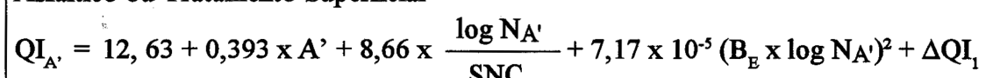
p. 28-29; o PDF usa 14,4 no cálculo de QI16 (ΔQI1 = -14,44) e cita 'item 10.3.4' (seria 9.3.4)
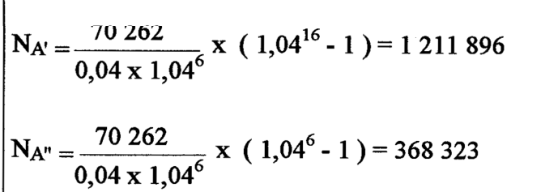
p. 30; no exemplo AD usa 0,189 x HVA (a equação 8 traz 0,819)
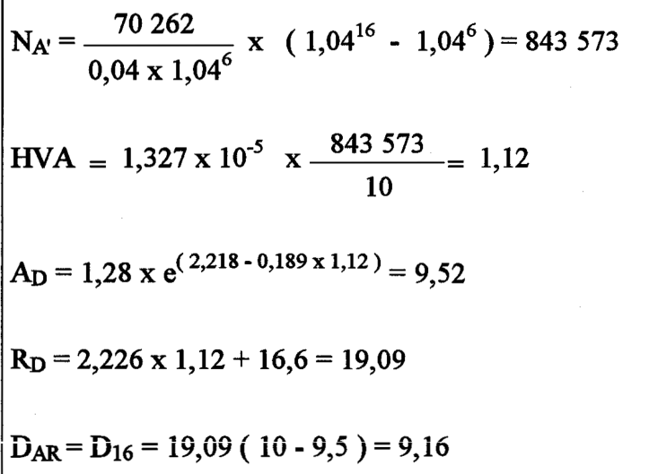
A fórmula de a2 para bases granulares dá valores absurdos; parece ser a fórmula por polegada dividida por 2,54, faltando ×10⁻⁴ na expressão inteira.
A eq. 8 imprime 0,819·HVA, mas o exemplo do Anexo (p. 30) e a eq. 3 usam 0,189; 9.2.2 manda comparar desgaste em vez de trincamento no tratamento superficial, mas o Anexo classifica a situação III pelo trincamento; o Anexo cita "item 10.3.4" (é 9.3.4) e "CBR2 = … da sub-base" onde se trata da base.
DNER-PRO 164/94Calibração e controle de sistemas de medidores de irregularidade de superfície de pavimento (Sistemas Integradores IPR/USP e Maysmeter) - Procedimentoabrir no sitePDF
6.2.4 (p. 7): ± lido como +; no PDF o V está sem barra (nos Anexos E/I é V̄) — mantido como no PDF
Anexos A–L (p. 8–18) reescritos: lixo de OCR dos formulários removido; Anexo E (p. 12) e Anexo L (p. 18) são tabelas preenchidas (tabm01, tabm02); Anexo L não tinha imagem. Anexo L (p. 18): M-38 percurso 4 = 497 no PDF, mas soma 3080 e Δ = 38 implicam 597 — transcrito como no PDF
Anexo L: a leitura "497" do M-38 não fecha com a soma 3080 nem com Δ = 38 (seria 597); 6.2.4 escreve "± 0,58 x V" sem a barra (V̄); o Anexo E dá 12,85, mas 0,58 × 22,17 = 12,86; remissões aos anexos deslocadas (6.2.2 cita o Anexo G como modelo, que seria o J); a 6.2.2 fala em 2 percursos, mas o Anexo L tem 5 e os fatores 2,11 e 0,58 valem para 5 leituras.
DNER-PRO 165/94Utilização de equipamento do DNER em serviços de pesquisa rodoviária contratados por empresas de consultoriaabrir no sitePDF
Falta o título da seção "14 Retirada do equipamento em caso de emergência" (listada no sumário); o parágrafo aparece sob a seção 13.
DNER-PRO 170/94Iluminação em rodovias federais (ABNT-NBR 5101)abrir no sitePDF
A mesma norma ABNT aparece como "MB-429" (2.1 e 3) e "NB-318" (2.2); a DNER-PRO 171/94 inverte (MB-318 / NB-429).
DNER-PRO 178/94Carga móvel (trem-tipo) em ponte rodoviária e passarela de pedestres (ABNT NBR 7188) - Procedimentoabrir no sitePDF
Título da seção 4 "PONTES E RODOVIAS FEDERAIS" (sumário: "pontes de rodovias federais").
DNER-PRO 179/94Guia para avaliação da resistência do concreto em estruturas - Procedimentoabrir no sitePDF
6.3 (p. 10): o PDF traz σm (provavelmente γm, coeficiente de minoração) — transcrito como está
O fator D/(1,5 + 1/r) parece ser o de conversão para cubo (BS 1881), embora a norma diga que o resultado é expresso em cilindro; p. 10: "não deve ser inferior a 1,2 vezes a resistência característica" sem dizer como estimar o fck (remete à NB-1).
DNER-PRO 207/94Projeto, execução e retirada de cimbramentos de pontes de concreto armado e protendido - Procedimentoabrir no sitePDF
p. 5: '0 < h < 1 m p = 24 kN/m² (2400 h kgf/m²)' — o h falta no valor em kN/m² (provável erro do PDF: 24 h); transcrito como está
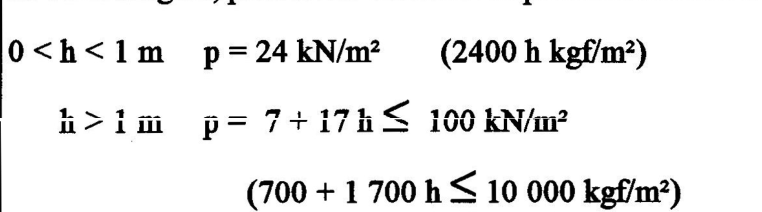
p. 39: 'γ = 15' no PDF (provavelmente 1,5) — transcrito como está
p. 45: (8.4.5) tem H_I no lado esquerdo (o texto fala do esforço de segunda ordem H_II) — provável erro do PDF, transcrito como está
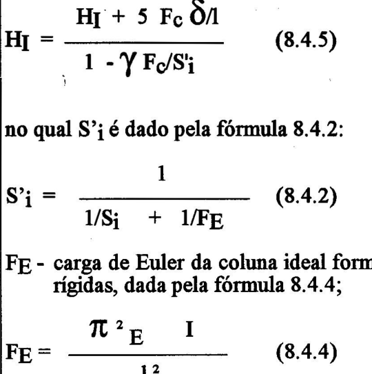
Quadro 8.4.1 (p. 38): '300' e '320' no PDF (provavelmente 3,00 e 3,20 m) — como está
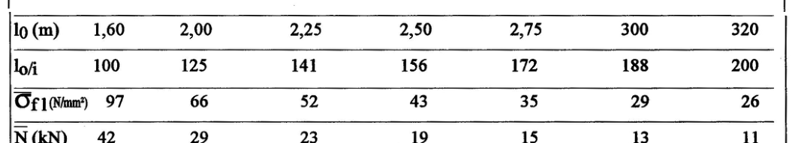
DNER-PRO 211/94Integração de rodovias com o meio ambiente na região amazônica - Procedimentoabrir no sitePDF
3.10 (p. 4): título riscado no PDF; repete o título de 3.9 (possível erro do PDF — deveria ser 'indireta')
DNER-PRO 250/94Cálculo do veículo total e veículo não volátil em tinta para demarcação viária - Procedimentoabrir no sitePDF
legenda de S como no PDF ('veículo não total'; provavelmente 'veículo não volátil')
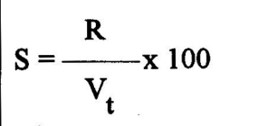
DNER-PRO 251/94Microesferas de vidros retrorrefletivas para demarcação viária - amostragem - Procedimentoabrir no sitePDF
Uma passagem no repartidor 1/16 dá 3 125 g (2 sacos) ou 6 250 g (4 sacos), nunca ≈ 5 000 g; a Tabela para em 1 160 sacos.
DNER-PRO 263/94Emprego de escórias de aciaria em pavimentos rodoviários - Procedimentoabrir no sitePDF
título 3.5 ilegível no OCR + tarja lateral; o PDF termina em 'adaptado pelo' (texto truncado no próprio PDF, p. 3)
DNER-PRO 269/94Projeto de restauração de pavimentos flexíveis - TECNAPAV - Procedimentoabrir no sitePDF
7.1: última linha meio apagada no PDF (p. 6) e lixo de OCR/tarja
8.5: linha meio apagada no PDF (p. 8)
9.3: linha meio apagada no PDF (p. 11)
TR〉50% no PDF lido como >; 1ª fórmula de V transcrita como está
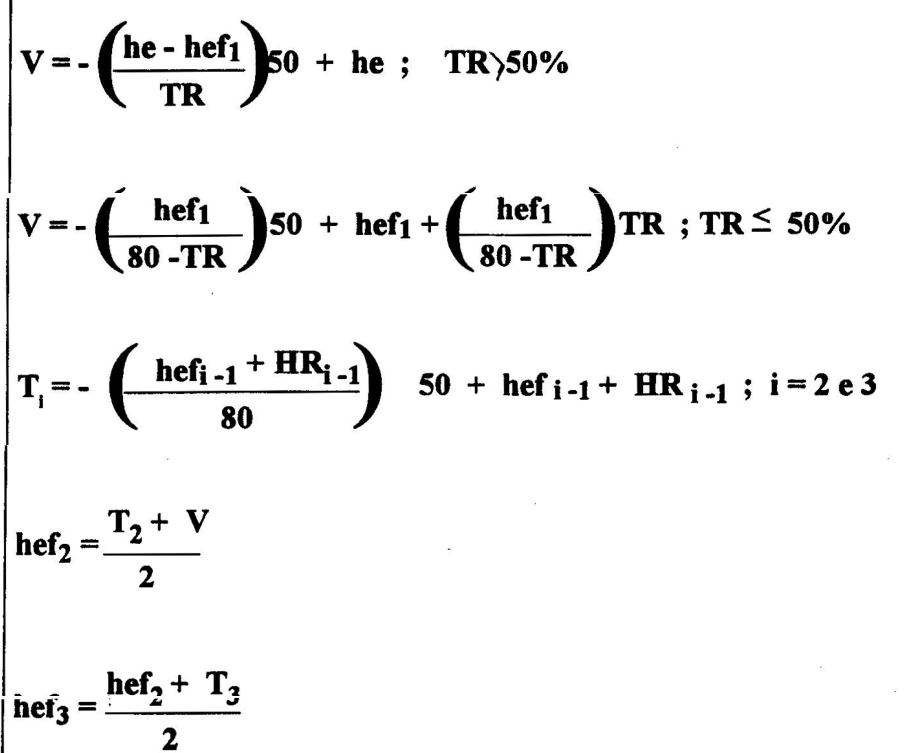
9.4: linha meio apagada no PDF (p. 14) e tarja
DNER-PRO 277/97Metodologia para controle estatístico de obras e serviços - Procedimentoabrir no sitePDF
4.3 b); o PDF escreve o somatório como X com índice 'Xi' (X_{Xi}) e índice J=1..n: transcrito como está
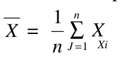
A fórmula de k traz "Ver Errata", mas a errata não está no PDF (a fórmula do texto reproduz o exemplo de 5.1.4); a Tabela 1 (p. 6) não tem n = 11, que as ES recentes do DNIT incluem (k = 1,19).
DNER-PRO 361/97Procedimentos para similaridades de materiais de construção - Procedimentoabrir no sitePDF
PA 45: mín = máx = 54 kg/mm² no PDF (p. 2; possível erro, PA-45 indicaria mín. 45) — transcrito como está
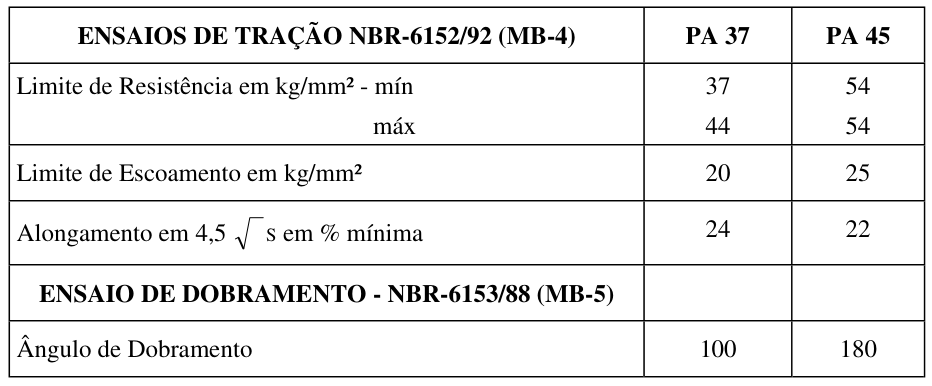
DNIT 010/2024-PROInspeções em pontes e viadutos - Procedimentoabrir no sitePDF
Quadro 1: o título "Tipo de inspeção" da 1ª coluna foi criado na transcrição (no PDF a coluna não tem título).
DNIT 060/2004-PROPavimento Rígido - Inspeção visual - Procedimentoabrir no sitePDF
Anexo E, 4 (p. 11): linhas fundidas; grau A = '20' no PDF (provavelmente '> 20', como no item 18) — mantido como no PDF
Severidade A = "20" — provavelmente > 20. Transcrito como no PDF.
DNIT 062/2004-PROPavimento Rígido - Avaliação objetiva - Procedimentoabrir no sitePDF
limites dos somatórios 'i=j' e 'j=i' como no PDF (p. 4); provavelmente i=1 e j=1
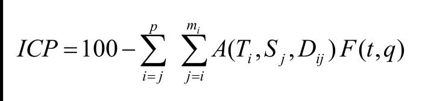
A figura do defeito 6.18 (placa bailarina) é idêntica à do 6.4 (degrau), pp. 12 e 26; o formulário de exemplo registra q = 6, mas o VDC de 48 corresponde à curva q = 5 (regra da nota do gráfico: só o maior valor por tipo de defeito); o formulário escreve "IPC" em vez de ICP.
DNIT 097/2025-PROElaboração de Registro de Diário de Obra do DNIT - Procedimentoabrir no sitePDF
Tabelas do Anexo A: cabeçalhos como "Serviço | Situação" foram criados na transcrição (no PDF não há linha de cabeçalho).
DNIT 132/2010-PROPavimentos - calibração da célula de carga e de sensores de deflexão dos deflectômetros do tipo “falling weight deflectometer (FWD)” - Procedimentoabrir no sitePDF
7.2.1 c diz que, com desvio dos três resultados inferior a 0,003, o procedimento deve ser repetido — contradiz 6.2 c e a AASHTO R32.
DNIT 162/2012-PROPavimentos - determinação de deflexões utilizando o deflectógrafo lacroix - Procedimentoabrir no sitePDF
Remete à "DNER-ME 024", hoje substituída pela DNIT 133-ME.
DNIT 170/2016-PROPavimentos -Determinação de deflexões utilizando o Curviâmetro - Procedimentoabrir no sitePDF
5.2 cita "DNIT-xxx/2015-PRO"; o raio de curvatura Rc não tem fórmula, só a definição de 3.5.
DNIT 171/2016-PROCalibração dos sensores do deflectógrafo Curviâmetro - Procedimentoabrir no sitePDF
5.2 k: A3 = 0,80 ± 1,5 admite valores negativos (−0,70 a 2,30); 3.1 cita "DNIT 170/2015".
DNIT 178/2018-PROPavimentação asfáltica - Preparação de corpos de prova para ensaios mecânicos usando o compactador giratório Superpave ou o Marshall - Procedimentoabrir no sitePDF
Condicionamento de 2 h ± 10 min em 5.3 e e 2 h ± 5 min em 5.3 f; termômetro com "resolução de 3,0 ºC" (p. 5); 6.1.2 (p. 8) diz "densidade máxima específica" onde deveria ser a massa específica aparente (Gmb).
DNIT 182/2018-PROConservação rodoviária - Determinação do nível de esforço de roçada - Procedimentoabrir no sitePDF
Tabela 1: "CentroOeste" do PDF escrito como "Centro-Oeste".
DNIT 381/2022-PROProjeto de aterros sobre solos moles para obras viárias - Procedimentoabrir no sitePDF
Tabela 5: "amostras deformadas e informadas" — provavelmente "indeformadas". Transcrito como no PDF.
DNIT 409/2017-PROMedida da retrorrefletividade com uso de equipamento dinâmico - Procedimentoabrir no sitePDF
transcrito como no PDF (p. 4): numerador 'X1' (seria X_i) e 'xi'/'X' em vez de x_i / x̄
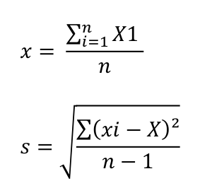
O índice cita uma "Tabela 2" que não existe na norma.
"Desvio padrão máximo de 20 %" não diz 20 % de quê (a ficha adota 20 % da média); os valores mínimos não estão na norma (estão no programa BR-Legal).
DNIT 433/2021-PROPavimentação - Levantamento do percentual de área trincada e de afundamento de trilha de roda de pavimento asfáltico em trechos experimentais, monitorados ou trechos homogêneos de curta extensão - Procedimentoabrir no sitePDF
A eq. 1 omite o ×100 que as eqs. 5 e 6 incluem.
DNIT 435/2021-PROMateriais rochosos usados em rodovias - Análise Petrográfica - Procedimentoabrir no sitePDF
"30 mm" — provavelmente 30 µm. Transcrito como no PDF.
Espessura da lâmina "cerca de 30 mm", contra 0,03 mm na definição 3.2 (p. 2).
DNIT 438/2022-PROPavimentação - Misturas asfálticas - Seleção granulométrica de agregados para concreto asfáltico pelo Método Bailey - Procedimentoabrir no sitePDF
4 b) cita "subseção 3.3", mas TNM é definido em 3.5; a seção 4 remete aos exemplos no "Anexo C" (estão no B) e 5.3 cita "Anexo D" (é o C).
"O Anexo C apresenta" os exemplos (estão no Anexo B); "subseção 3.3" para o TNM (é a 3.5); p. 7: "O Anexo D" (é o C); p. 8: "seção 5, a partir da alínea b" (seção 4, alínea c) e "Subseção 6.2" (5.2); no Anexo C o passo k usa AF@AG = 2,21 % e o passo i dá 2,20 %; a Tabela 3 não define PCT para TNM 12,5/9,5/4,75.
DNIT 461/2025-PROAgregados - Coleta de amostras de agregados - Procedimentoabrir no sitePDF
A Tabela 1 repete 40 kg nas duas primeiras faixas e não cobre dimensão máxima acima de 75 mm.
DNER-TER 002/79Conservação, restauração e melhoramentos - Terminologiaabrir no sitePDF
PDF escaneado (2 p.), OCR embaralhado: avisos [!warning] falsos (lixo do carimbo/cabeçalho), caixa de aprovação e 2.3.2 misturados; corpo reescrito a partir da imagem do PDF, mantendo a estrutura termo/definição. Nº do processo lido como 44.879/77 (pouco legível, p. 1)
DNER-TER 403/00Peneiras de ensaio e ensaio de peneiramento - Terminologiaabrir no sitePDF
possível erro do PDF (p. 3): item 3.2.19.1 deveria ser 3.2.18.2 (vem antes de 3.2.19); mantido como no PDF